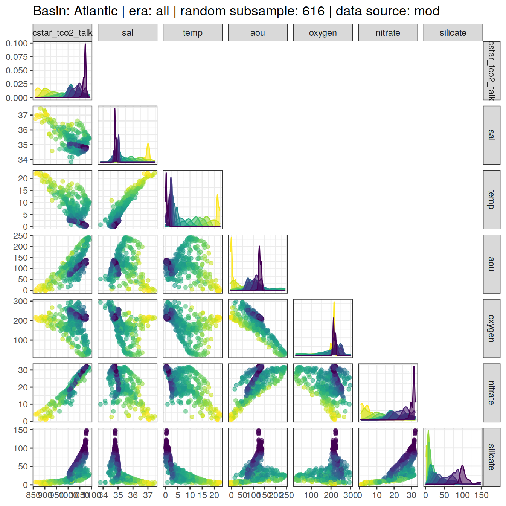
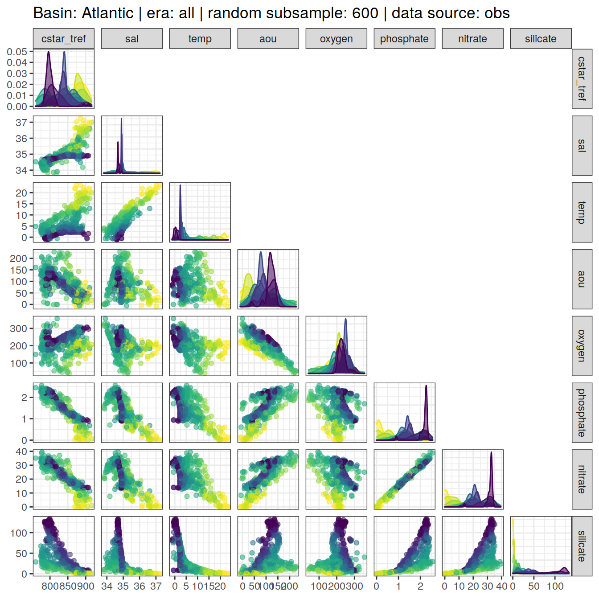
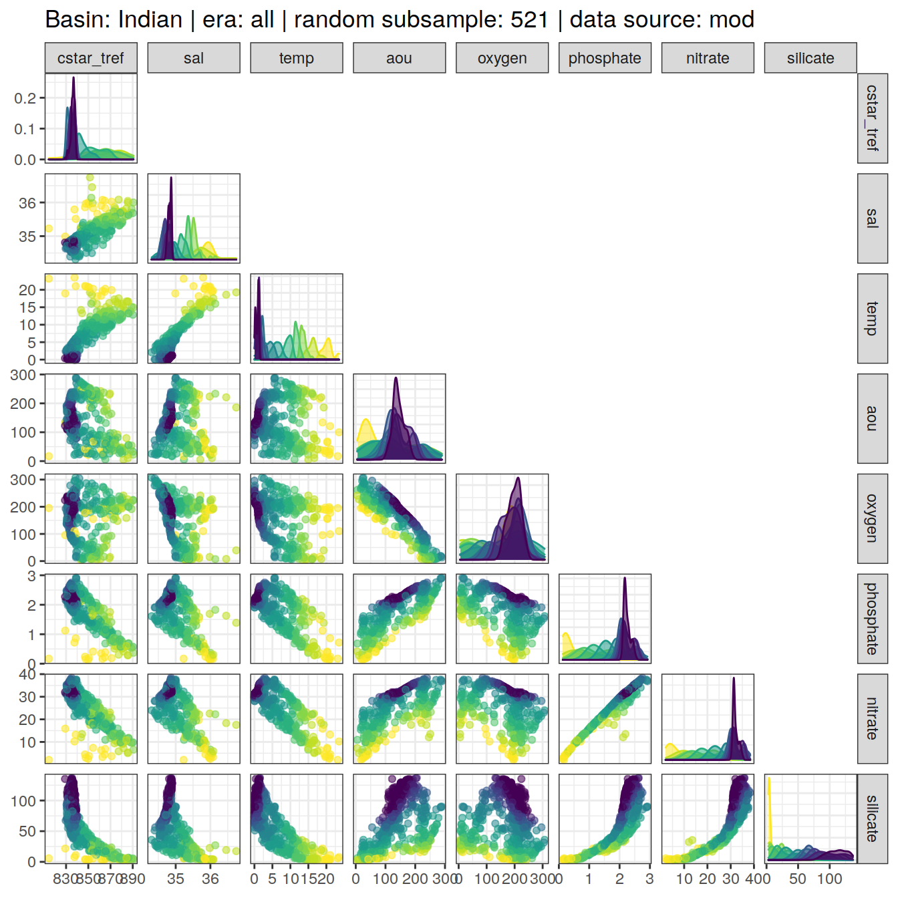
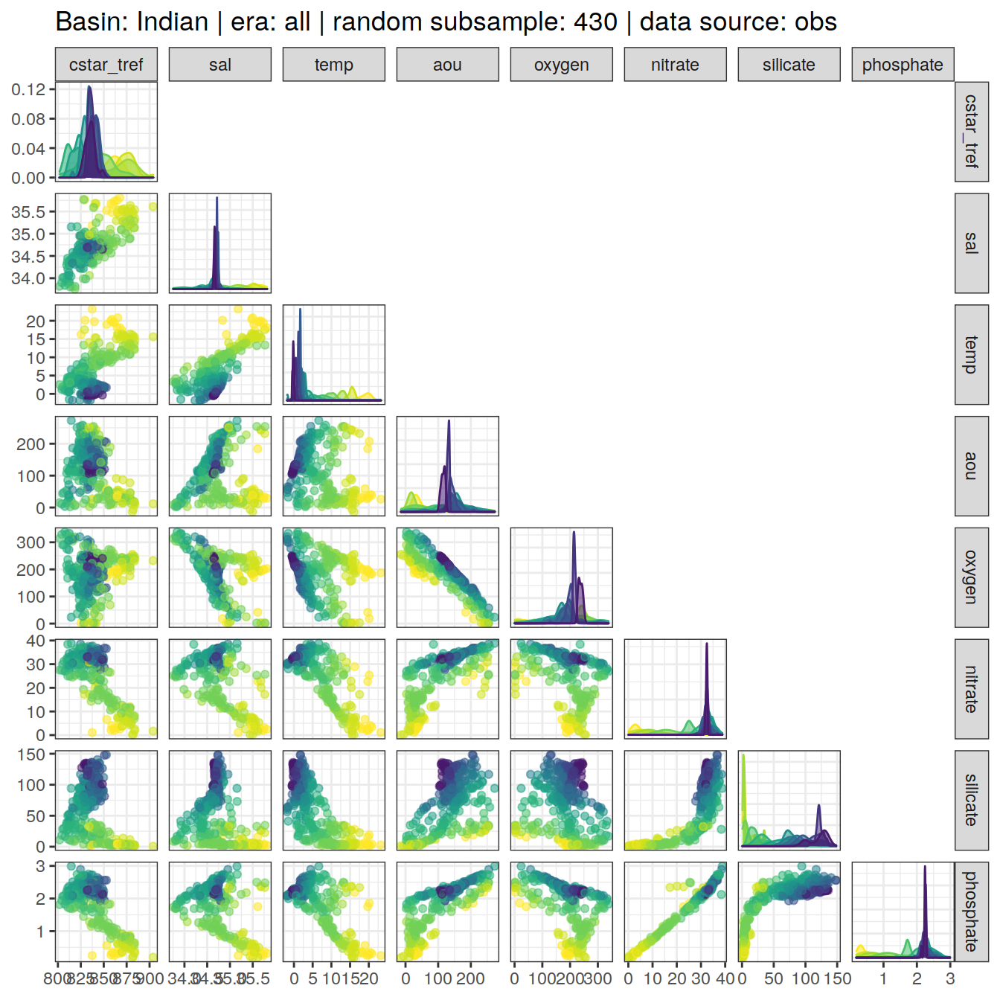

eMLR - assumption testing
Jens Daniel Müller
14 June, 2021
Last updated: 2021-06-14
Checks: 7 0
Knit directory: emlr_obs_v_XXX/
This reproducible R Markdown analysis was created with workflowr (version 1.6.2). The Checks tab describes the reproducibility checks that were applied when the results were created. The Past versions tab lists the development history.
Great! Since the R Markdown file has been committed to the Git repository, you know the exact version of the code that produced these results.
Great job! The global environment was empty. Objects defined in the global environment can affect the analysis in your R Markdown file in unknown ways. For reproduciblity it’s best to always run the code in an empty environment.
The command set.seed(20200707) was run prior to running the code in the R Markdown file. Setting a seed ensures that any results that rely on randomness, e.g. subsampling or permutations, are reproducible.
Great job! Recording the operating system, R version, and package versions is critical for reproducibility.
Nice! There were no cached chunks for this analysis, so you can be confident that you successfully produced the results during this run.
Great job! Using relative paths to the files within your workflowr project makes it easier to run your code on other machines.
Great! You are using Git for version control. Tracking code development and connecting the code version to the results is critical for reproducibility.
The results in this page were generated with repository version aeddb8d. See the Past versions tab to see a history of the changes made to the R Markdown and HTML files.
Note that you need to be careful to ensure that all relevant files for the analysis have been committed to Git prior to generating the results (you can use wflow_publish or wflow_git_commit). workflowr only checks the R Markdown file, but you know if there are other scripts or data files that it depends on. Below is the status of the Git repository when the results were generated:
Ignored files:
Ignored: .Rhistory
Ignored: .Rproj.user/
Unstaged changes:
Modified: code/Workflowr_project_managment.R
Note that any generated files, e.g. HTML, png, CSS, etc., are not included in this status report because it is ok for generated content to have uncommitted changes.
These are the previous versions of the repository in which changes were made to the R Markdown (analysis/eMLR_assumption_testing.Rmd) and HTML (docs/eMLR_assumption_testing.html) files. If you’ve configured a remote Git repository (see ?wflow_git_remote), click on the hyperlinks in the table below to view the files as they were in that past version.
| File | Version | Author | Date | Message |
|---|---|---|---|---|
| html | 48c73fc | jens-daniel-mueller | 2021-06-14 | Build site. |
| html | 439ee80 | jens-daniel-mueller | 2021-06-11 | Build site. |
| html | 33ffcab | jens-daniel-mueller | 2021-06-10 | Build site. |
| html | 7e1f407 | jens-daniel-mueller | 2021-06-10 | Build site. |
| html | 2cbe18c | jens-daniel-mueller | 2021-06-10 | added zonal mean section control plots |
| html | 69c79d0 | jens-daniel-mueller | 2021-06-08 | Build site. |
| html | 1772903 | jens-daniel-mueller | 2021-06-07 | Build site. |
| html | 594ed9a | jens-daniel-mueller | 2021-06-04 | Build site. |
| html | db7df0e | jens-daniel-mueller | 2021-06-04 | rebuild without overlapping eras |
| html | 2edc791 | jens-daniel-mueller | 2021-06-04 | Build site. |
| html | 207339d | jens-daniel-mueller | 2021-06-03 | Build site. |
| html | 315710b | jens-daniel-mueller | 2021-06-03 | include anomalous changes |
| html | be90356 | jens-daniel-mueller | 2021-06-02 | Build site. |
| html | d37a85d | jens-daniel-mueller | 2021-05-31 | Build site. |
| html | 4b7a5ee | jens-daniel-mueller | 2021-05-28 | Build site. |
| html | 12b455a | jens-daniel-mueller | 2021-05-27 | Build site. |
| Rmd | ee13efb | jens-daniel-mueller | 2021-05-27 | optional source of local params fully implemented |
| html | 8c736a6 | jens-daniel-mueller | 2021-05-27 | Build site. |
| Rmd | dc8e4e1 | jens-daniel-mueller | 2021-05-27 | optional source of local params implemented |
| html | 25bd183 | jens-daniel-mueller | 2021-05-26 | Build site. |
| html | b79cb2d | jens-daniel-mueller | 2021-05-20 | Build site. |
| html | 62bd574 | jens-daniel-mueller | 2021-05-20 | Build site. |
| html | 7c56c39 | jens-daniel-mueller | 2021-05-19 | Build site. |
| html | 0de759e | jens-daniel-mueller | 2021-05-13 | Build site. |
| html | 52e7583 | jens-daniel-mueller | 2021-05-12 | Build site. |
| html | 969e631 | jens-daniel-mueller | 2021-05-12 | Build site. |
| html | d2a83bc | jens-daniel-mueller | 2021-04-16 | Build site. |
| html | c0a47df | jens-daniel-mueller | 2021-04-16 | Build site. |
| html | 50290e8 | jens-daniel-mueller | 2021-04-16 | overlapping eras |
| html | a00ec94 | jens-daniel-mueller | 2021-04-16 | Build site. |
| html | b6fe355 | jens-daniel-mueller | 2021-04-16 | Build site. |
| html | 81b7c6d | jens-daniel-mueller | 2021-04-16 | Build site. |
| html | ddec5b7 | jens-daniel-mueller | 2021-04-15 | Build site. |
| html | 29edae5 | jens-daniel-mueller | 2021-04-14 | Build site. |
| html | 099d566 | jens-daniel-mueller | 2021-04-14 | Build site. |
| html | bb44686 | jens-daniel-mueller | 2021-04-14 | Build site. |
| html | bf40480 | jens-daniel-mueller | 2021-04-13 | Build site. |
| html | 9f31fe3 | jens-daniel-mueller | 2021-04-13 | Build site. |
| Rmd | 80e1ee3 | jens-daniel-mueller | 2021-04-13 | rerun post-2000 with model data |
| html | c98be84 | jens-daniel-mueller | 2021-04-13 | Build site. |
| html | ea17c90 | jens-daniel-mueller | 2021-04-09 | Build site. |
| Rmd | 4d61e3d | jens-daniel-mueller | 2021-04-09 | included model data |
| html | 338dd3c | jens-daniel-mueller | 2021-04-09 | Build site. |
| html | a79ca2c | jens-daniel-mueller | 2021-04-09 | included model data |
| html | 7831fd3 | jens-daniel-mueller | 2021-04-09 | Build site. |
| html | 20b26d4 | jens-daniel-mueller | 2021-04-08 | Build site. |
| html | c0895f8 | jens-daniel-mueller | 2021-04-07 | Build site. |
| html | 156d5b7 | jens-daniel-mueller | 2021-04-07 | Build site. |
| html | eb827c9 | jens-daniel-mueller | 2021-04-07 | Build site. |
| Rmd | 49be8ed | jens-daniel-mueller | 2021-03-26 | included model data |
| html | ab5c8cf | jens-daniel-mueller | 2021-03-24 | Build site. |
| Rmd | da3c481 | jens-daniel-mueller | 2021-03-24 | included model data |
| html | 19faa17 | jens-daniel-mueller | 2021-03-24 | Build site. |
| Rmd | ae3b4d7 | jens-daniel-mueller | 2021-03-24 | included model data |
| html | 03b6009 | jens-daniel-mueller | 2021-03-23 | removed before copying template |
| html | 98d4a6d | jens-daniel-mueller | 2021-03-23 | Build site. |
| html | f155edd | jens-daniel-mueller | 2021-03-23 | Build site. |
| html | 380d215 | jens-daniel-mueller | 2021-03-21 | Build site. |
| html | 33b385b | jens-daniel-mueller | 2021-03-20 | Build site. |
| html | 330dcd0 | jens-daniel-mueller | 2021-03-20 | Build site. |
| html | 83a13de | jens-daniel-mueller | 2021-03-20 | Build site. |
| html | cf98c6d | jens-daniel-mueller | 2021-03-16 | Build site. |
| html | a1d52ff | jens-daniel-mueller | 2021-03-15 | Build site. |
| html | 0bade3b | jens-daniel-mueller | 2021-03-15 | Build site. |
| html | 27c1f4b | jens-daniel-mueller | 2021-03-14 | Build site. |
| html | af75ebf | jens-daniel-mueller | 2021-03-14 | Build site. |
| html | 5017709 | jens-daniel-mueller | 2021-03-11 | Build site. |
| html | 585b07f | jens-daniel-mueller | 2021-03-11 | Build site. |
| html | 6482ed7 | jens-daniel-mueller | 2021-03-11 | Build site. |
| html | 85a5ed2 | jens-daniel-mueller | 2021-03-10 | Build site. |
| html | 00688a1 | jens-daniel-mueller | 2021-03-05 | Build site. |
| html | 6c0bec6 | jens-daniel-mueller | 2021-03-05 | Build site. |
| html | 3c2ec33 | jens-daniel-mueller | 2021-03-05 | Build site. |
| html | af70b94 | jens-daniel-mueller | 2021-03-04 | Build site. |
| html | 86406d5 | jens-daniel-mueller | 2021-02-24 | Build site. |
| html | 3d3b4cc | jens-daniel-mueller | 2021-02-23 | Build site. |
| html | 7b672f7 | jens-daniel-mueller | 2021-01-11 | Build site. |
| html | 33ba23c | jens-daniel-mueller | 2021-01-07 | Build site. |
| html | 318609d | jens-daniel-mueller | 2020-12-23 | adapted more variable predictor selection |
| html | 9d0b2d0 | jens-daniel-mueller | 2020-12-23 | Build site. |
| html | 0aa2b50 | jens-daniel-mueller | 2020-12-23 | remove html before duplication |
| html | 39113c3 | jens-daniel-mueller | 2020-12-23 | Build site. |
| html | 2886da0 | jens-daniel-mueller | 2020-12-19 | Build site. |
| html | 02f0ee9 | jens-daniel-mueller | 2020-12-18 | cleaned up for copying template |
| html | 965dba3 | jens-daniel-mueller | 2020-12-18 | Build site. |
| html | 5d452fe | jens-daniel-mueller | 2020-12-18 | Build site. |
| Rmd | ca65bf5 | jens-daniel-mueller | 2020-12-18 | rebuild after final cleaning |
| html | 7bcb4eb | jens-daniel-mueller | 2020-12-18 | Build site. |
| html | d397028 | jens-daniel-mueller | 2020-12-18 | Build site. |
| html | 7131186 | jens-daniel-mueller | 2020-12-17 | Build site. |
| html | 22b07fb | jens-daniel-mueller | 2020-12-17 | Build site. |
| html | f3a708f | jens-daniel-mueller | 2020-12-17 | Build site. |
| html | e4ca289 | jens-daniel-mueller | 2020-12-16 | Build site. |
| html | 158fe26 | jens-daniel-mueller | 2020-12-15 | Build site. |
| html | 7a9a4cb | jens-daniel-mueller | 2020-12-15 | Build site. |
| html | 61b263c | jens-daniel-mueller | 2020-12-15 | Build site. |
| html | 4d612dd | jens-daniel-mueller | 2020-12-15 | Build site. |
| Rmd | e7e5ff1 | jens-daniel-mueller | 2020-12-15 | rebuild with eMLR target variable selection |
| html | 953caf3 | jens-daniel-mueller | 2020-12-15 | Build site. |
| html | 42daf5c | jens-daniel-mueller | 2020-12-14 | Build site. |
| Rmd | 923aa7f | jens-daniel-mueller | 2020-12-14 | rebuild with new path and auto folder creation |
| html | 984697e | jens-daniel-mueller | 2020-12-12 | Build site. |
| html | 3ebff89 | jens-daniel-mueller | 2020-12-12 | Build site. |
| html | 5d96d3c | jens-daniel-mueller | 2020-12-11 | Build site. |
| Rmd | 3d33a37 | jens-daniel-mueller | 2020-12-11 | selectable basinmask, try 5 |
| html | b01a367 | jens-daniel-mueller | 2020-12-09 | Build site. |
| html | 24a632f | jens-daniel-mueller | 2020-12-07 | Build site. |
| html | 92dca91 | jens-daniel-mueller | 2020-12-07 | Build site. |
| html | 6a8004b | jens-daniel-mueller | 2020-12-07 | Build site. |
| html | 70bf1a5 | jens-daniel-mueller | 2020-12-07 | Build site. |
| html | 7555355 | jens-daniel-mueller | 2020-12-07 | Build site. |
| html | 143d6fa | jens-daniel-mueller | 2020-12-07 | Build site. |
| Rmd | 33b1973 | jens-daniel-mueller | 2020-12-07 | run with WOCE flag 2 only |
| html | abc6818 | jens-daniel-mueller | 2020-12-03 | Build site. |
| Rmd | 992ba15 | jens-daniel-mueller | 2020-12-03 | rebuild with variable inventory depth |
| html | c8c2e7b | jens-daniel-mueller | 2020-12-03 | Build site. |
| Rmd | 83203db | jens-daniel-mueller | 2020-12-03 | calculate cant with variable inventory depth |
| html | 090e4d5 | jens-daniel-mueller | 2020-12-02 | Build site. |
| html | 7c25f7a | jens-daniel-mueller | 2020-12-02 | Build site. |
| html | ec8dc38 | jens-daniel-mueller | 2020-12-02 | Build site. |
| html | c987de1 | jens-daniel-mueller | 2020-12-02 | Build site. |
| html | f8358f8 | jens-daniel-mueller | 2020-12-02 | Build site. |
| html | b03ddb8 | jens-daniel-mueller | 2020-12-02 | Build site. |
| Rmd | 9183e8f | jens-daniel-mueller | 2020-12-02 | revised assignment of era to eras |
| html | 22d0127 | jens-daniel-mueller | 2020-12-01 | Build site. |
| html | 0ff728b | jens-daniel-mueller | 2020-12-01 | Build site. |
| html | 91435ae | jens-daniel-mueller | 2020-12-01 | Build site. |
| Rmd | 17d09be | jens-daniel-mueller | 2020-12-01 | auto eras naming |
| html | cf19652 | jens-daniel-mueller | 2020-11-30 | Build site. |
| Rmd | 2842970 | jens-daniel-mueller | 2020-11-30 | cleaned for eMLR part only |
| html | 196be51 | jens-daniel-mueller | 2020-11-30 | Build site. |
| Rmd | 7a4b015 | jens-daniel-mueller | 2020-11-30 | first rebuild on ETH server |
| Rmd | bc61ce3 | Jens Müller | 2020-11-30 | Initial commit |
| html | bc61ce3 | Jens Müller | 2020-11-30 | Initial commit |
1 Version ID
The results displayed on this site correspond to the Version_ID: v_XXX
2 Required data
Required are:
- cleaned and prepared GLODAPv2.2020 file
GLODAP <-
read_csv(paste(path_version_data,
"GLODAPv2.2020_MLR_fitting_ready.csv",
sep = ""))3 Predictor correlation
The correlation between:
- pairs of seven potential predictor variables and
- C* and seven potential predictor variables
were investigated based on:
- property-property plots and
- calculated correlation coeffcients.
3.1 Correlation plots
For an overview, a random subset of data from all eras was plotted separately for both basins, with color indicating neutral density slabs (high density = dark-purple color).
plot_fun <- function(df){
ggpairs(
data = df,
columns = c(params_local$MLR_target,
params_local$MLR_predictors),
upper = "blank",
ggplot2::aes(col = gamma_slab, fill = gamma_slab, alpha = 0.01)
) +
scale_fill_viridis_d(direction = -1) +
scale_color_viridis_d(direction = -1) +
labs(title = paste(
"Basin:",
unique(df$basin),
"| era: all | random subsample:",
nrow(df),
"| data source:",
unique(df$data_source)
))
}
GLODAP %>%
slice_sample(n = 5e3) %>%
group_split(basin, data_source) %>%
map(plot_fun)[[1]]
| Version | Author | Date |
|---|---|---|
| 439ee80 | jens-daniel-mueller | 2021-06-11 |
| 33ffcab | jens-daniel-mueller | 2021-06-10 |
| 7e1f407 | jens-daniel-mueller | 2021-06-10 |
| 2cbe18c | jens-daniel-mueller | 2021-06-10 |
| 69c79d0 | jens-daniel-mueller | 2021-06-08 |
| 1772903 | jens-daniel-mueller | 2021-06-07 |
| 594ed9a | jens-daniel-mueller | 2021-06-04 |
| db7df0e | jens-daniel-mueller | 2021-06-04 |
| 2edc791 | jens-daniel-mueller | 2021-06-04 |
| 207339d | jens-daniel-mueller | 2021-06-03 |
| 315710b | jens-daniel-mueller | 2021-06-03 |
| be90356 | jens-daniel-mueller | 2021-06-02 |
| d37a85d | jens-daniel-mueller | 2021-05-31 |
| 4b7a5ee | jens-daniel-mueller | 2021-05-28 |
| 25bd183 | jens-daniel-mueller | 2021-05-26 |
| 62bd574 | jens-daniel-mueller | 2021-05-20 |
| 7c56c39 | jens-daniel-mueller | 2021-05-19 |
| 52e7583 | jens-daniel-mueller | 2021-05-12 |
| 969e631 | jens-daniel-mueller | 2021-05-12 |
| d2a83bc | jens-daniel-mueller | 2021-04-16 |
| c0a47df | jens-daniel-mueller | 2021-04-16 |
| 50290e8 | jens-daniel-mueller | 2021-04-16 |
| a00ec94 | jens-daniel-mueller | 2021-04-16 |
| b6fe355 | jens-daniel-mueller | 2021-04-16 |
| 81b7c6d | jens-daniel-mueller | 2021-04-16 |
| ddec5b7 | jens-daniel-mueller | 2021-04-15 |
| 29edae5 | jens-daniel-mueller | 2021-04-14 |
| 9f31fe3 | jens-daniel-mueller | 2021-04-13 |
| ea17c90 | jens-daniel-mueller | 2021-04-09 |
| 338dd3c | jens-daniel-mueller | 2021-04-09 |
| a79ca2c | jens-daniel-mueller | 2021-04-09 |
| eb827c9 | jens-daniel-mueller | 2021-04-07 |
| ab5c8cf | jens-daniel-mueller | 2021-03-24 |
| 03b6009 | jens-daniel-mueller | 2021-03-23 |
| 98d4a6d | jens-daniel-mueller | 2021-03-23 |
| 83a13de | jens-daniel-mueller | 2021-03-20 |
| cf98c6d | jens-daniel-mueller | 2021-03-16 |
| a1d52ff | jens-daniel-mueller | 2021-03-15 |
| 0bade3b | jens-daniel-mueller | 2021-03-15 |
| 27c1f4b | jens-daniel-mueller | 2021-03-14 |
| af75ebf | jens-daniel-mueller | 2021-03-14 |
| 5017709 | jens-daniel-mueller | 2021-03-11 |
| 585b07f | jens-daniel-mueller | 2021-03-11 |
| 85a5ed2 | jens-daniel-mueller | 2021-03-10 |
| 6c0bec6 | jens-daniel-mueller | 2021-03-05 |
| af70b94 | jens-daniel-mueller | 2021-03-04 |
| 7b672f7 | jens-daniel-mueller | 2021-01-11 |
| 33ba23c | jens-daniel-mueller | 2021-01-07 |
| 318609d | jens-daniel-mueller | 2020-12-23 |
| 9d0b2d0 | jens-daniel-mueller | 2020-12-23 |
| 0aa2b50 | jens-daniel-mueller | 2020-12-23 |
| 2886da0 | jens-daniel-mueller | 2020-12-19 |
| 02f0ee9 | jens-daniel-mueller | 2020-12-18 |
| 7bcb4eb | jens-daniel-mueller | 2020-12-18 |
| 158fe26 | jens-daniel-mueller | 2020-12-15 |
| 7a9a4cb | jens-daniel-mueller | 2020-12-15 |
| 61b263c | jens-daniel-mueller | 2020-12-15 |
| 4d612dd | jens-daniel-mueller | 2020-12-15 |
| 984697e | jens-daniel-mueller | 2020-12-12 |
| 3ebff89 | jens-daniel-mueller | 2020-12-12 |
| 5d96d3c | jens-daniel-mueller | 2020-12-11 |
[[2]]
| Version | Author | Date |
|---|---|---|
| 439ee80 | jens-daniel-mueller | 2021-06-11 |
| 33ffcab | jens-daniel-mueller | 2021-06-10 |
| 7e1f407 | jens-daniel-mueller | 2021-06-10 |
| 2cbe18c | jens-daniel-mueller | 2021-06-10 |
| 69c79d0 | jens-daniel-mueller | 2021-06-08 |
| 1772903 | jens-daniel-mueller | 2021-06-07 |
| 594ed9a | jens-daniel-mueller | 2021-06-04 |
| db7df0e | jens-daniel-mueller | 2021-06-04 |
| 2edc791 | jens-daniel-mueller | 2021-06-04 |
| 207339d | jens-daniel-mueller | 2021-06-03 |
| 315710b | jens-daniel-mueller | 2021-06-03 |
| d37a85d | jens-daniel-mueller | 2021-05-31 |
| 4b7a5ee | jens-daniel-mueller | 2021-05-28 |
| 25bd183 | jens-daniel-mueller | 2021-05-26 |
| 62bd574 | jens-daniel-mueller | 2021-05-20 |
| 7c56c39 | jens-daniel-mueller | 2021-05-19 |
| 52e7583 | jens-daniel-mueller | 2021-05-12 |
| 969e631 | jens-daniel-mueller | 2021-05-12 |
| d2a83bc | jens-daniel-mueller | 2021-04-16 |
| c0a47df | jens-daniel-mueller | 2021-04-16 |
| 50290e8 | jens-daniel-mueller | 2021-04-16 |
| a00ec94 | jens-daniel-mueller | 2021-04-16 |
| b6fe355 | jens-daniel-mueller | 2021-04-16 |
| 81b7c6d | jens-daniel-mueller | 2021-04-16 |
| ddec5b7 | jens-daniel-mueller | 2021-04-15 |
| 29edae5 | jens-daniel-mueller | 2021-04-14 |
| 9f31fe3 | jens-daniel-mueller | 2021-04-13 |
| ea17c90 | jens-daniel-mueller | 2021-04-09 |
| 338dd3c | jens-daniel-mueller | 2021-04-09 |
| a79ca2c | jens-daniel-mueller | 2021-04-09 |
| eb827c9 | jens-daniel-mueller | 2021-04-07 |
| ab5c8cf | jens-daniel-mueller | 2021-03-24 |
| 03b6009 | jens-daniel-mueller | 2021-03-23 |
| 98d4a6d | jens-daniel-mueller | 2021-03-23 |
| 83a13de | jens-daniel-mueller | 2021-03-20 |
| cf98c6d | jens-daniel-mueller | 2021-03-16 |
| a1d52ff | jens-daniel-mueller | 2021-03-15 |
| 0bade3b | jens-daniel-mueller | 2021-03-15 |
| 27c1f4b | jens-daniel-mueller | 2021-03-14 |
| af75ebf | jens-daniel-mueller | 2021-03-14 |
| 5017709 | jens-daniel-mueller | 2021-03-11 |
| 585b07f | jens-daniel-mueller | 2021-03-11 |
| 85a5ed2 | jens-daniel-mueller | 2021-03-10 |
| 6c0bec6 | jens-daniel-mueller | 2021-03-05 |
| af70b94 | jens-daniel-mueller | 2021-03-04 |
| 7b672f7 | jens-daniel-mueller | 2021-01-11 |
| 33ba23c | jens-daniel-mueller | 2021-01-07 |
| 318609d | jens-daniel-mueller | 2020-12-23 |
| 9d0b2d0 | jens-daniel-mueller | 2020-12-23 |
| 0aa2b50 | jens-daniel-mueller | 2020-12-23 |
| 2886da0 | jens-daniel-mueller | 2020-12-19 |
| 02f0ee9 | jens-daniel-mueller | 2020-12-18 |
| 7bcb4eb | jens-daniel-mueller | 2020-12-18 |
| 158fe26 | jens-daniel-mueller | 2020-12-15 |
| 7a9a4cb | jens-daniel-mueller | 2020-12-15 |
| 61b263c | jens-daniel-mueller | 2020-12-15 |
| 4d612dd | jens-daniel-mueller | 2020-12-15 |
| 984697e | jens-daniel-mueller | 2020-12-12 |
| 3ebff89 | jens-daniel-mueller | 2020-12-12 |
| 5d96d3c | jens-daniel-mueller | 2020-12-11 |
[[3]]
| Version | Author | Date |
|---|---|---|
| 439ee80 | jens-daniel-mueller | 2021-06-11 |
| 33ffcab | jens-daniel-mueller | 2021-06-10 |
| 7e1f407 | jens-daniel-mueller | 2021-06-10 |
| 2cbe18c | jens-daniel-mueller | 2021-06-10 |
| 69c79d0 | jens-daniel-mueller | 2021-06-08 |
| 1772903 | jens-daniel-mueller | 2021-06-07 |
| 594ed9a | jens-daniel-mueller | 2021-06-04 |
| db7df0e | jens-daniel-mueller | 2021-06-04 |
| 2edc791 | jens-daniel-mueller | 2021-06-04 |
| 207339d | jens-daniel-mueller | 2021-06-03 |
| 315710b | jens-daniel-mueller | 2021-06-03 |
| be90356 | jens-daniel-mueller | 2021-06-02 |
| d37a85d | jens-daniel-mueller | 2021-05-31 |
| 4b7a5ee | jens-daniel-mueller | 2021-05-28 |
| 25bd183 | jens-daniel-mueller | 2021-05-26 |
| 62bd574 | jens-daniel-mueller | 2021-05-20 |
| 7c56c39 | jens-daniel-mueller | 2021-05-19 |
| 52e7583 | jens-daniel-mueller | 2021-05-12 |
| 969e631 | jens-daniel-mueller | 2021-05-12 |
| d2a83bc | jens-daniel-mueller | 2021-04-16 |
| c0a47df | jens-daniel-mueller | 2021-04-16 |
| 50290e8 | jens-daniel-mueller | 2021-04-16 |
| a00ec94 | jens-daniel-mueller | 2021-04-16 |
| b6fe355 | jens-daniel-mueller | 2021-04-16 |
| 81b7c6d | jens-daniel-mueller | 2021-04-16 |
| ddec5b7 | jens-daniel-mueller | 2021-04-15 |
| 29edae5 | jens-daniel-mueller | 2021-04-14 |
| 099d566 | jens-daniel-mueller | 2021-04-14 |
| bb44686 | jens-daniel-mueller | 2021-04-14 |
| bf40480 | jens-daniel-mueller | 2021-04-13 |
| 9f31fe3 | jens-daniel-mueller | 2021-04-13 |
| ea17c90 | jens-daniel-mueller | 2021-04-09 |
| 338dd3c | jens-daniel-mueller | 2021-04-09 |
| a79ca2c | jens-daniel-mueller | 2021-04-09 |
| eb827c9 | jens-daniel-mueller | 2021-04-07 |
| ab5c8cf | jens-daniel-mueller | 2021-03-24 |
| 0aa2b50 | jens-daniel-mueller | 2020-12-23 |
| 2886da0 | jens-daniel-mueller | 2020-12-19 |
| 02f0ee9 | jens-daniel-mueller | 2020-12-18 |
| 7bcb4eb | jens-daniel-mueller | 2020-12-18 |
| 158fe26 | jens-daniel-mueller | 2020-12-15 |
| 7a9a4cb | jens-daniel-mueller | 2020-12-15 |
| 61b263c | jens-daniel-mueller | 2020-12-15 |
| 4d612dd | jens-daniel-mueller | 2020-12-15 |
| 984697e | jens-daniel-mueller | 2020-12-12 |
| 3ebff89 | jens-daniel-mueller | 2020-12-12 |
| 5d96d3c | jens-daniel-mueller | 2020-12-11 |
[[4]]
| Version | Author | Date |
|---|---|---|
| 439ee80 | jens-daniel-mueller | 2021-06-11 |
| 33ffcab | jens-daniel-mueller | 2021-06-10 |
| 7e1f407 | jens-daniel-mueller | 2021-06-10 |
| 2cbe18c | jens-daniel-mueller | 2021-06-10 |
| 69c79d0 | jens-daniel-mueller | 2021-06-08 |
| 1772903 | jens-daniel-mueller | 2021-06-07 |
| 594ed9a | jens-daniel-mueller | 2021-06-04 |
| db7df0e | jens-daniel-mueller | 2021-06-04 |
| 2edc791 | jens-daniel-mueller | 2021-06-04 |
| 207339d | jens-daniel-mueller | 2021-06-03 |
| 315710b | jens-daniel-mueller | 2021-06-03 |
| d37a85d | jens-daniel-mueller | 2021-05-31 |
| 4b7a5ee | jens-daniel-mueller | 2021-05-28 |
| 25bd183 | jens-daniel-mueller | 2021-05-26 |
| 62bd574 | jens-daniel-mueller | 2021-05-20 |
| 7c56c39 | jens-daniel-mueller | 2021-05-19 |
| 52e7583 | jens-daniel-mueller | 2021-05-12 |
| 969e631 | jens-daniel-mueller | 2021-05-12 |
| d2a83bc | jens-daniel-mueller | 2021-04-16 |
| c0a47df | jens-daniel-mueller | 2021-04-16 |
| 50290e8 | jens-daniel-mueller | 2021-04-16 |
| a00ec94 | jens-daniel-mueller | 2021-04-16 |
| b6fe355 | jens-daniel-mueller | 2021-04-16 |
| 81b7c6d | jens-daniel-mueller | 2021-04-16 |
| ddec5b7 | jens-daniel-mueller | 2021-04-15 |
| 29edae5 | jens-daniel-mueller | 2021-04-14 |
| 099d566 | jens-daniel-mueller | 2021-04-14 |
| bb44686 | jens-daniel-mueller | 2021-04-14 |
| bf40480 | jens-daniel-mueller | 2021-04-13 |
| 9f31fe3 | jens-daniel-mueller | 2021-04-13 |
| ea17c90 | jens-daniel-mueller | 2021-04-09 |
| 338dd3c | jens-daniel-mueller | 2021-04-09 |
| a79ca2c | jens-daniel-mueller | 2021-04-09 |
| eb827c9 | jens-daniel-mueller | 2021-04-07 |
| ab5c8cf | jens-daniel-mueller | 2021-03-24 |
| 984697e | jens-daniel-mueller | 2020-12-12 |
| 3ebff89 | jens-daniel-mueller | 2020-12-12 |
| 5d96d3c | jens-daniel-mueller | 2020-12-11 |
GLODAP <- GLODAP %>%
filter(data_source == "obs") %>%
select(-data_source)Individual correlation plots for each basin, era and neutral density (gamma) slab are available at:
/nfs/kryo/work/jenmueller/emlr_cant/observations/v_XXX/figures/Observations_correlation/
if (params_local$plot_all_figures == "y") {
for (i_basin in unique(GLODAP$basin)) {
for (i_era in unique(GLODAP$era)) {
# i_basin <- unique(GLODAP$basin)[1]
# i_era <- unique(GLODAP$era)[1]
GLODAP_basin_era <- GLODAP %>%
filter(basin == i_basin,
era == i_era)
for (i_gamma_slab in unique(GLODAP_basin_era$gamma_slab)) {
# i_gamma_slab <- unique(GLODAP_basin_era$gamma_slab)[5]
GLODAP_highlight <- GLODAP_basin_era %>%
mutate(gamma_highlight = if_else(gamma_slab == i_gamma_slab,
"in", "out")) %>%
arrange(desc(gamma_highlight))
p <- GLODAP_highlight %>%
ggpairs(
columns = c(params_local$MLR_target,
params_local$MLR_predictors),
ggplot2::aes(
col = gamma_highlight,
fill = gamma_highlight,
alpha = 0.01
)
) +
scale_fill_manual(values = c("red", "grey")) +
scale_color_manual(values = c("red", "grey")) +
labs(
title = paste(
i_era,
"|",
i_basin,
"| Gamma slab",
i_gamma_slab,
"| # obs total",
nrow(GLODAP_basin_era),
"| # obs slab",
nrow(GLODAP_highlight %>%
filter(gamma_highlight == "in"))
)
)
png(
filename = paste(
path_version_figures,
"Observations_correlation/",
paste(
"Predictor_correlation",
i_era,
i_basin,
i_gamma_slab,
".png",
sep = "_"
),
sep = ""),
width = 12,
height = 12,
units = "in",
res = 300
)
print(p)
dev.off()
}
}
}
}3.2 Correlation assesment
3.2.1 Calculation of correlation coeffcients
Correlation coefficients were calculated individually within each slabs, era and basin.
for (i_basin in unique(GLODAP$basin)) {
for (i_era in unique(GLODAP$era)) {
# i_basin <- unique(GLODAP$basin)[1]
# i_era <- unique(GLODAP$era)[1]
GLODAP_basin_era <- GLODAP %>%
filter(basin == i_basin,
era == i_era) %>%
select(basin,
era,
gamma_slab,
params_local$MLR_target,
params_local$MLR_predictors)
for (i_gamma_slab in unique(GLODAP_basin_era$gamma_slab)) {
# i_gamma_slab <- unique(GLODAP_basin_era$gamma_slab)[5]
print(i_gamma_slab)
GLODAP_basin_era_slab <- GLODAP_basin_era %>%
filter(gamma_slab == i_gamma_slab)
# calculate correlation table
cor_target_predictor_temp <- GLODAP_basin_era_slab %>%
select(-c(basin, era, gamma_slab)) %>%
correlate() %>%
focus(params_local$MLR_target) %>%
mutate(basin = i_basin,
era = i_era,
gamma_slab = i_gamma_slab)
if (exists("cor_target_predictor")) {
cor_target_predictor <-
bind_rows(cor_target_predictor, cor_target_predictor_temp)
}
if (!exists("cor_target_predictor")) {
cor_target_predictor <- cor_target_predictor_temp
}
cor_predictors_temp <- GLODAP_basin_era_slab %>%
select(-c(basin, era, gamma_slab)) %>%
correlate() %>%
shave %>%
stretch() %>%
filter(!is.na(r),
x != params_local$MLR_target,
y != params_local$MLR_target) %>%
mutate(pair = paste(x, y, sep = " + ")) %>%
select(-c(x, y)) %>%
mutate(basin = i_basin,
era = i_era,
gamma_slab = i_gamma_slab)
if (exists("cor_predictors")) {
cor_predictors <- bind_rows(cor_predictors, cor_predictors_temp)
}
if (!exists("cor_predictors")) {
cor_predictors <- cor_predictors_temp
}
}
}
}
rm(cor_predictors_temp, cor_target_predictor_temp,
i_gamma_slab, i_era, i_basin,
GLODAP_basin_era, GLODAP_basin_era_slab)3.2.2 Predictor pairs
Below, the range of correlations coefficients for each predictor pair is plotted per basin (facet) and density slab (color). Note that the range indicates the min and max values of in total 3 calculated coefficients (one per era).
# calculate min, max, mean across all eras
cor_predictors_stats <- cor_predictors %>%
group_by(pair, basin, gamma_slab) %>%
summarise(mean_r = mean(r),
min_r = min(r),
max_r = max(r)) %>%
ungroup()
# plot figure
cor_predictors_stats %>%
mutate(pair = reorder(pair, mean_r)) %>%
ggplot() +
geom_vline(xintercept = c(-0.9, 0.9), col = "red") +
geom_vline(xintercept = 0) +
geom_linerange(
aes(y = pair, xmin = min_r, xmax = max_r, col = gamma_slab),
position = position_dodge(width = 0.6)) +
facet_wrap(~basin) +
scale_color_viridis_d(direction = -1) +
labs(x = "correlation coefficient", y = "") +
theme(legend.position = "top")
| Version | Author | Date |
|---|---|---|
| 7e1f407 | jens-daniel-mueller | 2021-06-10 |
| 2cbe18c | jens-daniel-mueller | 2021-06-10 |
| 594ed9a | jens-daniel-mueller | 2021-06-04 |
| db7df0e | jens-daniel-mueller | 2021-06-04 |
| 207339d | jens-daniel-mueller | 2021-06-03 |
| 315710b | jens-daniel-mueller | 2021-06-03 |
| d37a85d | jens-daniel-mueller | 2021-05-31 |
| 25bd183 | jens-daniel-mueller | 2021-05-26 |
| 62bd574 | jens-daniel-mueller | 2021-05-20 |
| 7c56c39 | jens-daniel-mueller | 2021-05-19 |
| 52e7583 | jens-daniel-mueller | 2021-05-12 |
| 969e631 | jens-daniel-mueller | 2021-05-12 |
| d2a83bc | jens-daniel-mueller | 2021-04-16 |
| c0a47df | jens-daniel-mueller | 2021-04-16 |
| 50290e8 | jens-daniel-mueller | 2021-04-16 |
| b6fe355 | jens-daniel-mueller | 2021-04-16 |
| 81b7c6d | jens-daniel-mueller | 2021-04-16 |
| ddec5b7 | jens-daniel-mueller | 2021-04-15 |
| 29edae5 | jens-daniel-mueller | 2021-04-14 |
| 099d566 | jens-daniel-mueller | 2021-04-14 |
| bb44686 | jens-daniel-mueller | 2021-04-14 |
| bf40480 | jens-daniel-mueller | 2021-04-13 |
| 9f31fe3 | jens-daniel-mueller | 2021-04-13 |
| 338dd3c | jens-daniel-mueller | 2021-04-09 |
| a79ca2c | jens-daniel-mueller | 2021-04-09 |
| eb827c9 | jens-daniel-mueller | 2021-04-07 |
| 19faa17 | jens-daniel-mueller | 2021-03-24 |
| 03b6009 | jens-daniel-mueller | 2021-03-23 |
| 98d4a6d | jens-daniel-mueller | 2021-03-23 |
| f155edd | jens-daniel-mueller | 2021-03-23 |
| 83a13de | jens-daniel-mueller | 2021-03-20 |
| cf98c6d | jens-daniel-mueller | 2021-03-16 |
| a1d52ff | jens-daniel-mueller | 2021-03-15 |
| 0bade3b | jens-daniel-mueller | 2021-03-15 |
| 27c1f4b | jens-daniel-mueller | 2021-03-14 |
| af75ebf | jens-daniel-mueller | 2021-03-14 |
| 5017709 | jens-daniel-mueller | 2021-03-11 |
| 585b07f | jens-daniel-mueller | 2021-03-11 |
| 85a5ed2 | jens-daniel-mueller | 2021-03-10 |
| 6c0bec6 | jens-daniel-mueller | 2021-03-05 |
| 7b672f7 | jens-daniel-mueller | 2021-01-11 |
| 33ba23c | jens-daniel-mueller | 2021-01-07 |
| 318609d | jens-daniel-mueller | 2020-12-23 |
| 9d0b2d0 | jens-daniel-mueller | 2020-12-23 |
| 0aa2b50 | jens-daniel-mueller | 2020-12-23 |
| 2886da0 | jens-daniel-mueller | 2020-12-19 |
| 02f0ee9 | jens-daniel-mueller | 2020-12-18 |
| 158fe26 | jens-daniel-mueller | 2020-12-15 |
| 984697e | jens-daniel-mueller | 2020-12-12 |
| 3ebff89 | jens-daniel-mueller | 2020-12-12 |
| 5d96d3c | jens-daniel-mueller | 2020-12-11 |
| 24a632f | jens-daniel-mueller | 2020-12-07 |
| 6a8004b | jens-daniel-mueller | 2020-12-07 |
| 70bf1a5 | jens-daniel-mueller | 2020-12-07 |
| 7555355 | jens-daniel-mueller | 2020-12-07 |
| 143d6fa | jens-daniel-mueller | 2020-12-07 |
| 0ff728b | jens-daniel-mueller | 2020-12-01 |
| 91435ae | jens-daniel-mueller | 2020-12-01 |
| 196be51 | jens-daniel-mueller | 2020-11-30 |
| bc61ce3 | Jens Müller | 2020-11-30 |
# print table
kable(cor_predictors_stats) %>%
add_header_above() %>%
kable_styling() %>%
scroll_box(width = "100%", height = "400px")| pair | basin | gamma_slab | mean_r | min_r | max_r |
|---|---|---|---|---|---|
| aou + nitrate | Atlantic | (-Inf,26] | 0.8780974 | 0.8707876 | 0.8854073 |
| aou + nitrate | Atlantic | (26,26.5] | 0.8399300 | 0.8000703 | 0.8797897 |
| aou + nitrate | Atlantic | (26.5,26.75] | 0.9270970 | 0.9180352 | 0.9361588 |
| aou + nitrate | Atlantic | (26.75,27] | 0.9125182 | 0.9100567 | 0.9149796 |
| aou + nitrate | Atlantic | (27,27.25] | 0.8480902 | 0.8246378 | 0.8715425 |
| aou + nitrate | Atlantic | (27.25,27.5] | 0.7696271 | 0.7567222 | 0.7825321 |
| aou + nitrate | Atlantic | (27.5,27.75] | 0.8595970 | 0.8593388 | 0.8598552 |
| aou + nitrate | Atlantic | (27.75,27.85] | 0.9231579 | 0.8959147 | 0.9504011 |
| aou + nitrate | Atlantic | (27.85,27.95] | 0.9344459 | 0.9189277 | 0.9499641 |
| aou + nitrate | Atlantic | (27.95,28.05] | 0.9521725 | 0.9485849 | 0.9557601 |
| aou + nitrate | Atlantic | (28.05,28.1] | 0.9551039 | 0.9503270 | 0.9598808 |
| aou + nitrate | Atlantic | (28.1,28.15] | 0.9740785 | 0.9715129 | 0.9766440 |
| aou + nitrate | Atlantic | (28.15,28.2] | 0.9805117 | 0.9688489 | 0.9921744 |
| aou + nitrate | Atlantic | (28.2, Inf] | 0.8329571 | 0.8125777 | 0.8533365 |
| aou + nitrate | Indo-Pacific | (-Inf,26] | 0.9074862 | 0.8888153 | 0.9261571 |
| aou + nitrate | Indo-Pacific | (26,26.5] | 0.9004832 | 0.8975165 | 0.9034500 |
| aou + nitrate | Indo-Pacific | (26.5,26.75] | 0.9003243 | 0.8852525 | 0.9153962 |
| aou + nitrate | Indo-Pacific | (26.75,27] | 0.9337717 | 0.9261465 | 0.9413969 |
| aou + nitrate | Indo-Pacific | (27,27.25] | 0.9618462 | 0.9604849 | 0.9632075 |
| aou + nitrate | Indo-Pacific | (27.25,27.5] | 0.9657259 | 0.9590750 | 0.9723769 |
| aou + nitrate | Indo-Pacific | (27.5,27.75] | 0.9676726 | 0.9626934 | 0.9726517 |
| aou + nitrate | Indo-Pacific | (27.75,27.85] | 0.9794216 | 0.9791540 | 0.9796893 |
| aou + nitrate | Indo-Pacific | (27.85,27.95] | 0.9783228 | 0.9727691 | 0.9838765 |
| aou + nitrate | Indo-Pacific | (27.95,28.05] | 0.9678453 | 0.9590218 | 0.9766688 |
| aou + nitrate | Indo-Pacific | (28.05,28.1] | 0.9740000 | 0.9647119 | 0.9832881 |
| aou + nitrate | Indo-Pacific | (28.1,28.2] | 0.9698620 | 0.9607989 | 0.9789251 |
| aou + nitrate | Indo-Pacific | (28.2,28.3] | 0.2578245 | 0.1914519 | 0.3241971 |
| aou + nitrate | Indo-Pacific | (28.3,28.4] | 0.3996155 | 0.2932106 | 0.5060205 |
| aou + nitrate | Indo-Pacific | (28.4, Inf] | 0.0674241 | -0.7799844 | 0.9148327 |
| aou + phosphate | Atlantic | (-Inf,26] | 0.3268044 | 0.1161918 | 0.5374170 |
| aou + phosphate | Atlantic | (26,26.5] | 0.6074974 | 0.5295337 | 0.6854611 |
| aou + phosphate | Atlantic | (26.5,26.75] | 0.8268896 | 0.8054538 | 0.8483254 |
| aou + phosphate | Atlantic | (26.75,27] | 0.8376498 | 0.8364258 | 0.8388739 |
| aou + phosphate | Atlantic | (27,27.25] | 0.7882454 | 0.7716481 | 0.8048427 |
| aou + phosphate | Atlantic | (27.25,27.5] | 0.7145452 | 0.6876614 | 0.7414290 |
| aou + phosphate | Atlantic | (27.5,27.75] | 0.8337489 | 0.8319623 | 0.8355355 |
| aou + phosphate | Atlantic | (27.75,27.85] | 0.9032177 | 0.8687022 | 0.9377333 |
| aou + phosphate | Atlantic | (27.85,27.95] | 0.9266638 | 0.9117408 | 0.9415868 |
| aou + phosphate | Atlantic | (27.95,28.05] | 0.9479011 | 0.9440306 | 0.9517716 |
| aou + phosphate | Atlantic | (28.05,28.1] | 0.9493167 | 0.9446299 | 0.9540034 |
| aou + phosphate | Atlantic | (28.1,28.15] | 0.9694211 | 0.9694102 | 0.9694320 |
| aou + phosphate | Atlantic | (28.15,28.2] | 0.9795170 | 0.9672205 | 0.9918135 |
| aou + phosphate | Atlantic | (28.2, Inf] | 0.8256328 | 0.8053427 | 0.8459229 |
| aou + phosphate | Indo-Pacific | (-Inf,26] | 0.9313398 | 0.9097193 | 0.9529604 |
| aou + phosphate | Indo-Pacific | (26,26.5] | 0.9501100 | 0.9466412 | 0.9535788 |
| aou + phosphate | Indo-Pacific | (26.5,26.75] | 0.9351662 | 0.9259491 | 0.9443834 |
| aou + phosphate | Indo-Pacific | (26.75,27] | 0.9439365 | 0.9405595 | 0.9473135 |
| aou + phosphate | Indo-Pacific | (27,27.25] | 0.9710108 | 0.9675812 | 0.9744403 |
| aou + phosphate | Indo-Pacific | (27.25,27.5] | 0.9777731 | 0.9764946 | 0.9790517 |
| aou + phosphate | Indo-Pacific | (27.5,27.75] | 0.9792282 | 0.9771367 | 0.9813198 |
| aou + phosphate | Indo-Pacific | (27.75,27.85] | 0.9844774 | 0.9842735 | 0.9846814 |
| aou + phosphate | Indo-Pacific | (27.85,27.95] | 0.9808223 | 0.9763551 | 0.9852894 |
| aou + phosphate | Indo-Pacific | (27.95,28.05] | 0.9709799 | 0.9652365 | 0.9767233 |
| aou + phosphate | Indo-Pacific | (28.05,28.1] | 0.9753522 | 0.9690699 | 0.9816344 |
| aou + phosphate | Indo-Pacific | (28.1,28.2] | 0.9646642 | 0.9563244 | 0.9730040 |
| aou + phosphate | Indo-Pacific | (28.2,28.3] | 0.1628512 | -0.0131199 | 0.3388222 |
| aou + phosphate | Indo-Pacific | (28.3,28.4] | 0.2768212 | 0.0437994 | 0.5098430 |
| aou + phosphate | Indo-Pacific | (28.4, Inf] | -0.0009445 | -0.8362895 | 0.8344006 |
| aou + phosphate_star | Atlantic | (-Inf,26] | -0.4804522 | -0.6209379 | -0.3399664 |
| aou + phosphate_star | Atlantic | (26,26.5] | 0.1319798 | 0.0360289 | 0.2279307 |
| aou + phosphate_star | Atlantic | (26.5,26.75] | 0.3619855 | 0.3174654 | 0.4065055 |
| aou + phosphate_star | Atlantic | (26.75,27] | 0.2133193 | 0.1848317 | 0.2418070 |
| aou + phosphate_star | Atlantic | (27,27.25] | 0.1959128 | 0.1496351 | 0.2421905 |
| aou + phosphate_star | Atlantic | (27.25,27.5] | 0.2088533 | 0.1141399 | 0.3035668 |
| aou + phosphate_star | Atlantic | (27.5,27.75] | 0.4932257 | 0.4845311 | 0.5019203 |
| aou + phosphate_star | Atlantic | (27.75,27.85] | 0.5834070 | 0.4688966 | 0.6979173 |
| aou + phosphate_star | Atlantic | (27.85,27.95] | 0.6102477 | 0.5508575 | 0.6696380 |
| aou + phosphate_star | Atlantic | (27.95,28.05] | 0.7824086 | 0.7661677 | 0.7986495 |
| aou + phosphate_star | Atlantic | (28.05,28.1] | 0.8179178 | 0.8003725 | 0.8354630 |
| aou + phosphate_star | Atlantic | (28.1,28.15] | 0.8831043 | 0.8821784 | 0.8840302 |
| aou + phosphate_star | Atlantic | (28.15,28.2] | 0.9253912 | 0.8794625 | 0.9713200 |
| aou + phosphate_star | Atlantic | (28.2, Inf] | 0.5115352 | 0.4453060 | 0.5777645 |
| aou + phosphate_star | Indo-Pacific | (-Inf,26] | 0.6190438 | 0.5338892 | 0.7041983 |
| aou + phosphate_star | Indo-Pacific | (26,26.5] | 0.6069279 | 0.5710231 | 0.6428326 |
| aou + phosphate_star | Indo-Pacific | (26.5,26.75] | 0.4355185 | 0.3131343 | 0.5579026 |
| aou + phosphate_star | Indo-Pacific | (26.75,27] | 0.4077351 | 0.3127535 | 0.5027167 |
| aou + phosphate_star | Indo-Pacific | (27,27.25] | 0.1289150 | 0.1127944 | 0.1450356 |
| aou + phosphate_star | Indo-Pacific | (27.25,27.5] | -0.3699598 | -0.3925911 | -0.3473286 |
| aou + phosphate_star | Indo-Pacific | (27.5,27.75] | -0.5669382 | -0.5684933 | -0.5653831 |
| aou + phosphate_star | Indo-Pacific | (27.75,27.85] | -0.4947249 | -0.5882266 | -0.4012232 |
| aou + phosphate_star | Indo-Pacific | (27.85,27.95] | -0.2229047 | -0.2915892 | -0.1542202 |
| aou + phosphate_star | Indo-Pacific | (27.95,28.05] | 0.1846125 | 0.1802164 | 0.1890086 |
| aou + phosphate_star | Indo-Pacific | (28.05,28.1] | 0.5821166 | 0.5327705 | 0.6314627 |
| aou + phosphate_star | Indo-Pacific | (28.1,28.2] | 0.1545672 | 0.1113118 | 0.1978226 |
| aou + phosphate_star | Indo-Pacific | (28.2,28.3] | -0.7304780 | -0.7929070 | -0.6680490 |
| aou + phosphate_star | Indo-Pacific | (28.3,28.4] | -0.8659053 | -0.8928349 | -0.8389757 |
| aou + phosphate_star | Indo-Pacific | (28.4, Inf] | -0.9622800 | -0.9916952 | -0.9328648 |
| aou + silicate | Atlantic | (-Inf,26] | 0.0484463 | 0.0005371 | 0.0963554 |
| aou + silicate | Atlantic | (26,26.5] | 0.5412817 | 0.4296965 | 0.6528669 |
| aou + silicate | Atlantic | (26.5,26.75] | 0.7603580 | 0.6416118 | 0.8791042 |
| aou + silicate | Atlantic | (26.75,27] | 0.8067345 | 0.7525519 | 0.8609171 |
| aou + silicate | Atlantic | (27,27.25] | 0.7460575 | 0.7299072 | 0.7622079 |
| aou + silicate | Atlantic | (27.25,27.5] | 0.5053217 | 0.4438917 | 0.5667517 |
| aou + silicate | Atlantic | (27.5,27.75] | 0.6337637 | 0.5996827 | 0.6678447 |
| aou + silicate | Atlantic | (27.75,27.85] | 0.8182979 | 0.7974794 | 0.8391164 |
| aou + silicate | Atlantic | (27.85,27.95] | 0.8585107 | 0.8414685 | 0.8755529 |
| aou + silicate | Atlantic | (27.95,28.05] | 0.9324735 | 0.9317078 | 0.9332392 |
| aou + silicate | Atlantic | (28.05,28.1] | 0.9560107 | 0.9540312 | 0.9579903 |
| aou + silicate | Atlantic | (28.1,28.15] | 0.9684605 | 0.9682882 | 0.9686328 |
| aou + silicate | Atlantic | (28.15,28.2] | 0.9853209 | 0.9801279 | 0.9905140 |
| aou + silicate | Atlantic | (28.2, Inf] | 0.8332320 | 0.7876928 | 0.8787712 |
| aou + silicate | Indo-Pacific | (-Inf,26] | 0.7230875 | 0.6693177 | 0.7768573 |
| aou + silicate | Indo-Pacific | (26,26.5] | 0.6736188 | 0.6498798 | 0.6973578 |
| aou + silicate | Indo-Pacific | (26.5,26.75] | 0.6129100 | 0.5294312 | 0.6963888 |
| aou + silicate | Indo-Pacific | (26.75,27] | 0.7514587 | 0.7023238 | 0.8005937 |
| aou + silicate | Indo-Pacific | (27,27.25] | 0.8947610 | 0.8808285 | 0.9086935 |
| aou + silicate | Indo-Pacific | (27.25,27.5] | 0.9193527 | 0.9060404 | 0.9326649 |
| aou + silicate | Indo-Pacific | (27.5,27.75] | 0.9349113 | 0.9188769 | 0.9509457 |
| aou + silicate | Indo-Pacific | (27.75,27.85] | 0.9691683 | 0.9649648 | 0.9733718 |
| aou + silicate | Indo-Pacific | (27.85,27.95] | 0.9643847 | 0.9623400 | 0.9664294 |
| aou + silicate | Indo-Pacific | (27.95,28.05] | 0.9553880 | 0.9528355 | 0.9579405 |
| aou + silicate | Indo-Pacific | (28.05,28.1] | 0.9671717 | 0.9670122 | 0.9673313 |
| aou + silicate | Indo-Pacific | (28.1,28.2] | 0.9315576 | 0.9288093 | 0.9343060 |
| aou + silicate | Indo-Pacific | (28.2,28.3] | 0.3898559 | 0.2883828 | 0.4913291 |
| aou + silicate | Indo-Pacific | (28.3,28.4] | 0.4749716 | 0.2969728 | 0.6529705 |
| aou + silicate | Indo-Pacific | (28.4, Inf] | 0.3522235 | -0.2922564 | 0.9967033 |
| nitrate + phosphate | Atlantic | (-Inf,26] | 0.6170006 | 0.4343841 | 0.7996171 |
| nitrate + phosphate | Atlantic | (26,26.5] | 0.8842301 | 0.8512531 | 0.9172071 |
| nitrate + phosphate | Atlantic | (26.5,26.75] | 0.9662887 | 0.9597815 | 0.9727959 |
| nitrate + phosphate | Atlantic | (26.75,27] | 0.9807238 | 0.9803852 | 0.9810623 |
| nitrate + phosphate | Atlantic | (27,27.25] | 0.9876845 | 0.9875989 | 0.9877701 |
| nitrate + phosphate | Atlantic | (27.25,27.5] | 0.9912243 | 0.9909665 | 0.9914821 |
| nitrate + phosphate | Atlantic | (27.5,27.75] | 0.9916980 | 0.9884283 | 0.9949677 |
| nitrate + phosphate | Atlantic | (27.75,27.85] | 0.9930971 | 0.9903267 | 0.9958675 |
| nitrate + phosphate | Atlantic | (27.85,27.95] | 0.9889433 | 0.9842159 | 0.9936707 |
| nitrate + phosphate | Atlantic | (27.95,28.05] | 0.9905488 | 0.9863597 | 0.9947379 |
| nitrate + phosphate | Atlantic | (28.05,28.1] | 0.9912346 | 0.9885557 | 0.9939135 |
| nitrate + phosphate | Atlantic | (28.1,28.15] | 0.9934122 | 0.9916388 | 0.9951857 |
| nitrate + phosphate | Atlantic | (28.15,28.2] | 0.9977483 | 0.9969718 | 0.9985248 |
| nitrate + phosphate | Atlantic | (28.2, Inf] | 0.9952117 | 0.9942995 | 0.9961239 |
| nitrate + phosphate | Indo-Pacific | (-Inf,26] | 0.9643356 | 0.9554812 | 0.9731899 |
| nitrate + phosphate | Indo-Pacific | (26,26.5] | 0.9578251 | 0.9571274 | 0.9585228 |
| nitrate + phosphate | Indo-Pacific | (26.5,26.75] | 0.9608570 | 0.9510646 | 0.9706494 |
| nitrate + phosphate | Indo-Pacific | (26.75,27] | 0.9839781 | 0.9789140 | 0.9890422 |
| nitrate + phosphate | Indo-Pacific | (27,27.25] | 0.9893513 | 0.9874127 | 0.9912899 |
| nitrate + phosphate | Indo-Pacific | (27.25,27.5] | 0.9899275 | 0.9873237 | 0.9925313 |
| nitrate + phosphate | Indo-Pacific | (27.5,27.75] | 0.9888902 | 0.9866896 | 0.9910908 |
| nitrate + phosphate | Indo-Pacific | (27.75,27.85] | 0.9896216 | 0.9890017 | 0.9902415 |
| nitrate + phosphate | Indo-Pacific | (27.85,27.95] | 0.9902472 | 0.9894680 | 0.9910265 |
| nitrate + phosphate | Indo-Pacific | (27.95,28.05] | 0.9870136 | 0.9828769 | 0.9911502 |
| nitrate + phosphate | Indo-Pacific | (28.05,28.1] | 0.9840364 | 0.9802009 | 0.9878719 |
| nitrate + phosphate | Indo-Pacific | (28.1,28.2] | 0.9816675 | 0.9792641 | 0.9840709 |
| nitrate + phosphate | Indo-Pacific | (28.2,28.3] | 0.5660656 | 0.4916556 | 0.6404757 |
| nitrate + phosphate | Indo-Pacific | (28.3,28.4] | 0.6626759 | 0.6122271 | 0.7131247 |
| nitrate + phosphate | Indo-Pacific | (28.4, Inf] | 0.8511028 | 0.8254382 | 0.8767674 |
| nitrate + phosphate_star | Atlantic | (-Inf,26] | -0.1206854 | -0.2920599 | 0.0506891 |
| nitrate + phosphate_star | Atlantic | (26,26.5] | 0.5786107 | 0.5332719 | 0.6239495 |
| nitrate + phosphate_star | Atlantic | (26.5,26.75] | 0.6643974 | 0.6402413 | 0.6885536 |
| nitrate + phosphate_star | Atlantic | (26.75,27] | 0.5788092 | 0.5484392 | 0.6091792 |
| nitrate + phosphate_star | Atlantic | (27,27.25] | 0.6701764 | 0.6050736 | 0.7352792 |
| nitrate + phosphate_star | Atlantic | (27.25,27.5] | 0.7729603 | 0.7280539 | 0.8178667 |
| nitrate + phosphate_star | Atlantic | (27.5,27.75] | 0.8532495 | 0.8429334 | 0.8635657 |
| nitrate + phosphate_star | Atlantic | (27.75,27.85] | 0.8377640 | 0.7977583 | 0.8777698 |
| nitrate + phosphate_star | Atlantic | (27.85,27.95] | 0.8306988 | 0.8069578 | 0.8544398 |
| nitrate + phosphate_star | Atlantic | (27.95,28.05] | 0.9178533 | 0.9062293 | 0.9294774 |
| nitrate + phosphate_star | Atlantic | (28.05,28.1] | 0.9370348 | 0.9285436 | 0.9455260 |
| nitrate + phosphate_star | Atlantic | (28.1,28.15] | 0.9542480 | 0.9529287 | 0.9555673 |
| nitrate + phosphate_star | Atlantic | (28.15,28.2] | 0.9765366 | 0.9630277 | 0.9900454 |
| nitrate + phosphate_star | Atlantic | (28.2, Inf] | 0.8929510 | 0.8774346 | 0.9084674 |
| nitrate + phosphate_star | Indo-Pacific | (-Inf,26] | 0.8491944 | 0.8142076 | 0.8841812 |
| nitrate + phosphate_star | Indo-Pacific | (26,26.5] | 0.8224364 | 0.8054055 | 0.8394673 |
| nitrate + phosphate_star | Indo-Pacific | (26.5,26.75] | 0.7072046 | 0.6256152 | 0.7887939 |
| nitrate + phosphate_star | Indo-Pacific | (26.75,27] | 0.6680896 | 0.5984367 | 0.7377425 |
| nitrate + phosphate_star | Indo-Pacific | (27,27.25] | 0.3595895 | 0.3450514 | 0.3741276 |
| nitrate + phosphate_star | Indo-Pacific | (27.25,27.5] | -0.1486622 | -0.1978451 | -0.0994793 |
| nitrate + phosphate_star | Indo-Pacific | (27.5,27.75] | -0.3685473 | -0.3860536 | -0.3510410 |
| nitrate + phosphate_star | Indo-Pacific | (27.75,27.85] | -0.3436031 | -0.4437094 | -0.2434968 |
| nitrate + phosphate_star | Indo-Pacific | (27.85,27.95] | -0.0562196 | -0.1511268 | 0.0386876 |
| nitrate + phosphate_star | Indo-Pacific | (27.95,28.05] | 0.3797988 | 0.3636652 | 0.3959324 |
| nitrate + phosphate_star | Indo-Pacific | (28.05,28.1] | 0.7009325 | 0.6791881 | 0.7226769 |
| nitrate + phosphate_star | Indo-Pacific | (28.1,28.2] | 0.3304585 | 0.2575451 | 0.4033718 |
| nitrate + phosphate_star | Indo-Pacific | (28.2,28.3] | 0.2274856 | 0.2181786 | 0.2367925 |
| nitrate + phosphate_star | Indo-Pacific | (28.3,28.4] | -0.0548341 | -0.1303596 | 0.0206914 |
| nitrate + phosphate_star | Indo-Pacific | (28.4, Inf] | 0.0128156 | -0.7836413 | 0.8092725 |
| nitrate + silicate | Atlantic | (-Inf,26] | 0.3852213 | 0.3737099 | 0.3967327 |
| nitrate + silicate | Atlantic | (26,26.5] | 0.8190080 | 0.7621788 | 0.8758372 |
| nitrate + silicate | Atlantic | (26.5,26.75] | 0.8878217 | 0.8018000 | 0.9738433 |
| nitrate + silicate | Atlantic | (26.75,27] | 0.9066283 | 0.8669764 | 0.9462803 |
| nitrate + silicate | Atlantic | (27,27.25] | 0.9288692 | 0.9255504 | 0.9321881 |
| nitrate + silicate | Atlantic | (27.25,27.5] | 0.8773646 | 0.8545276 | 0.9002017 |
| nitrate + silicate | Atlantic | (27.5,27.75] | 0.8821195 | 0.8698852 | 0.8943538 |
| nitrate + silicate | Atlantic | (27.75,27.85] | 0.9447467 | 0.9429239 | 0.9465695 |
| nitrate + silicate | Atlantic | (27.85,27.95] | 0.9637128 | 0.9625409 | 0.9648847 |
| nitrate + silicate | Atlantic | (27.95,28.05] | 0.9802484 | 0.9797392 | 0.9807576 |
| nitrate + silicate | Atlantic | (28.05,28.1] | 0.9879211 | 0.9864922 | 0.9893499 |
| nitrate + silicate | Atlantic | (28.1,28.15] | 0.9889219 | 0.9875579 | 0.9902860 |
| nitrate + silicate | Atlantic | (28.15,28.2] | 0.9928481 | 0.9907244 | 0.9949718 |
| nitrate + silicate | Atlantic | (28.2, Inf] | 0.9711822 | 0.9697343 | 0.9726301 |
| nitrate + silicate | Indo-Pacific | (-Inf,26] | 0.8794479 | 0.8661039 | 0.8927918 |
| nitrate + silicate | Indo-Pacific | (26,26.5] | 0.8261872 | 0.8059414 | 0.8464330 |
| nitrate + silicate | Indo-Pacific | (26.5,26.75] | 0.8005937 | 0.7475808 | 0.8536066 |
| nitrate + silicate | Indo-Pacific | (26.75,27] | 0.8489254 | 0.8168772 | 0.8809736 |
| nitrate + silicate | Indo-Pacific | (27,27.25] | 0.9146567 | 0.9009335 | 0.9283798 |
| nitrate + silicate | Indo-Pacific | (27.25,27.5] | 0.9075474 | 0.8967977 | 0.9182970 |
| nitrate + silicate | Indo-Pacific | (27.5,27.75] | 0.9067633 | 0.8910105 | 0.9225160 |
| nitrate + silicate | Indo-Pacific | (27.75,27.85] | 0.9536526 | 0.9487122 | 0.9585930 |
| nitrate + silicate | Indo-Pacific | (27.85,27.95] | 0.9648557 | 0.9643315 | 0.9653800 |
| nitrate + silicate | Indo-Pacific | (27.95,28.05] | 0.9575356 | 0.9476853 | 0.9673860 |
| nitrate + silicate | Indo-Pacific | (28.05,28.1] | 0.9614902 | 0.9506577 | 0.9723226 |
| nitrate + silicate | Indo-Pacific | (28.1,28.2] | 0.9521740 | 0.9487852 | 0.9555627 |
| nitrate + silicate | Indo-Pacific | (28.2,28.3] | 0.5250263 | 0.5037711 | 0.5462815 |
| nitrate + silicate | Indo-Pacific | (28.3,28.4] | 0.7082584 | 0.6915639 | 0.7249528 |
| nitrate + silicate | Indo-Pacific | (28.4, Inf] | 0.8556500 | 0.7964885 | 0.9148115 |
| phosphate + phosphate_star | Atlantic | (-Inf,26] | 0.6451260 | 0.5943524 | 0.6958997 |
| phosphate + phosphate_star | Atlantic | (26,26.5] | 0.8637049 | 0.8632033 | 0.8642064 |
| phosphate + phosphate_star | Atlantic | (26.5,26.75] | 0.8216814 | 0.8152771 | 0.8280858 |
| phosphate + phosphate_star | Atlantic | (26.75,27] | 0.7100738 | 0.6868885 | 0.7332592 |
| phosphate + phosphate_star | Atlantic | (27,27.25] | 0.7540454 | 0.7054791 | 0.8026117 |
| phosphate + phosphate_star | Atlantic | (27.25,27.5] | 0.8300193 | 0.7979000 | 0.8621386 |
| phosphate + phosphate_star | Atlantic | (27.5,27.75] | 0.8885944 | 0.8821465 | 0.8950424 |
| phosphate + phosphate_star | Atlantic | (27.75,27.85] | 0.8720753 | 0.8422192 | 0.9019314 |
| phosphate + phosphate_star | Atlantic | (27.85,27.95] | 0.8603753 | 0.8416712 | 0.8790795 |
| phosphate + phosphate_star | Atlantic | (27.95,28.05] | 0.9378677 | 0.9324904 | 0.9432450 |
| phosphate + phosphate_star | Atlantic | (28.05,28.1] | 0.9561499 | 0.9514770 | 0.9608227 |
| phosphate + phosphate_star | Atlantic | (28.1,28.15] | 0.9704809 | 0.9698408 | 0.9711209 |
| phosphate + phosphate_star | Atlantic | (28.15,28.2] | 0.9817697 | 0.9702426 | 0.9932969 |
| phosphate + phosphate_star | Atlantic | (28.2, Inf] | 0.9051221 | 0.8878587 | 0.9223855 |
| phosphate + phosphate_star | Indo-Pacific | (-Inf,26] | 0.8473467 | 0.8176823 | 0.8770112 |
| phosphate + phosphate_star | Indo-Pacific | (26,26.5] | 0.8220077 | 0.8024335 | 0.8415820 |
| phosphate + phosphate_star | Indo-Pacific | (26.5,26.75] | 0.7220619 | 0.6459210 | 0.7982028 |
| phosphate + phosphate_star | Indo-Pacific | (26.75,27] | 0.6827691 | 0.6139759 | 0.7515623 |
| phosphate + phosphate_star | Indo-Pacific | (27,27.25] | 0.3574089 | 0.3568229 | 0.3579948 |
| phosphate + phosphate_star | Indo-Pacific | (27.25,27.5] | -0.1786078 | -0.2057565 | -0.1514592 |
| phosphate + phosphate_star | Indo-Pacific | (27.5,27.75] | -0.4056460 | -0.4087439 | -0.4025480 |
| phosphate + phosphate_star | Indo-Pacific | (27.75,27.85] | -0.3489586 | -0.4549125 | -0.2430047 |
| phosphate + phosphate_star | Indo-Pacific | (27.85,27.95] | -0.0407941 | -0.1364437 | 0.0548555 |
| phosphate + phosphate_star | Indo-Pacific | (27.95,28.05] | 0.4077962 | 0.3892489 | 0.4263434 |
| phosphate + phosphate_star | Indo-Pacific | (28.05,28.1] | 0.7439326 | 0.7228835 | 0.7649817 |
| phosphate + phosphate_star | Indo-Pacific | (28.1,28.2] | 0.4033275 | 0.3341288 | 0.4725261 |
| phosphate + phosphate_star | Indo-Pacific | (28.2,28.3] | 0.5313392 | 0.4630755 | 0.5996030 |
| phosphate + phosphate_star | Indo-Pacific | (28.3,28.4] | 0.2225751 | 0.0377189 | 0.4074313 |
| phosphate + phosphate_star | Indo-Pacific | (28.4, Inf] | 0.1593565 | -0.5803584 | 0.8990714 |
| sal + aou | Atlantic | (-Inf,26] | 0.4366689 | 0.3171619 | 0.5561760 |
| sal + aou | Atlantic | (26,26.5] | -0.0542724 | -0.0896746 | -0.0188702 |
| sal + aou | Atlantic | (26.5,26.75] | -0.2527151 | -0.2975249 | -0.2079053 |
| sal + aou | Atlantic | (26.75,27] | -0.1561416 | -0.1562543 | -0.1560290 |
| sal + aou | Atlantic | (27,27.25] | -0.1971118 | -0.2305229 | -0.1637007 |
| sal + aou | Atlantic | (27.25,27.5] | -0.1641550 | -0.2431947 | -0.0851154 |
| sal + aou | Atlantic | (27.5,27.75] | -0.3444528 | -0.3850636 | -0.3038419 |
| sal + aou | Atlantic | (27.75,27.85] | -0.2962873 | -0.4440605 | -0.1485140 |
| sal + aou | Atlantic | (27.85,27.95] | -0.2487919 | -0.3637616 | -0.1338221 |
| sal + aou | Atlantic | (27.95,28.05] | -0.5898904 | -0.6487273 | -0.5310534 |
| sal + aou | Atlantic | (28.05,28.1] | -0.6605982 | -0.7102626 | -0.6109338 |
| sal + aou | Atlantic | (28.1,28.15] | -0.7507053 | -0.7706568 | -0.7307538 |
| sal + aou | Atlantic | (28.15,28.2] | -0.8747361 | -0.9419656 | -0.8075066 |
| sal + aou | Atlantic | (28.2, Inf] | -0.5433114 | -0.5575408 | -0.5290820 |
| sal + aou | Indo-Pacific | (-Inf,26] | -0.0388671 | -0.0626539 | -0.0150804 |
| sal + aou | Indo-Pacific | (26,26.5] | -0.1607240 | -0.2775633 | -0.0438848 |
| sal + aou | Indo-Pacific | (26.5,26.75] | -0.1699143 | -0.3896434 | 0.0498147 |
| sal + aou | Indo-Pacific | (26.75,27] | -0.2500683 | -0.3983886 | -0.1017479 |
| sal + aou | Indo-Pacific | (27,27.25] | -0.1195234 | -0.1541120 | -0.0849349 |
| sal + aou | Indo-Pacific | (27.25,27.5] | 0.0702485 | 0.0424332 | 0.0980638 |
| sal + aou | Indo-Pacific | (27.5,27.75] | 0.0003233 | -0.0098205 | 0.0104671 |
| sal + aou | Indo-Pacific | (27.75,27.85] | -0.1339601 | -0.2176578 | -0.0502624 |
| sal + aou | Indo-Pacific | (27.85,27.95] | -0.2198067 | -0.2363942 | -0.2032192 |
| sal + aou | Indo-Pacific | (27.95,28.05] | -0.3861965 | -0.4115502 | -0.3608428 |
| sal + aou | Indo-Pacific | (28.05,28.1] | -0.6609777 | -0.7013088 | -0.6206465 |
| sal + aou | Indo-Pacific | (28.1,28.2] | -0.5907220 | -0.6309469 | -0.5504971 |
| sal + aou | Indo-Pacific | (28.2,28.3] | 0.8255892 | 0.7956097 | 0.8555687 |
| sal + aou | Indo-Pacific | (28.3,28.4] | 0.9189161 | 0.9167395 | 0.9210927 |
| sal + aou | Indo-Pacific | (28.4, Inf] | 0.8158317 | 0.6657295 | 0.9659339 |
| sal + nitrate | Atlantic | (-Inf,26] | 0.1201746 | 0.0259690 | 0.2143802 |
| sal + nitrate | Atlantic | (26,26.5] | -0.4521420 | -0.4781748 | -0.4261091 |
| sal + nitrate | Atlantic | (26.5,26.75] | -0.5512765 | -0.5856076 | -0.5169455 |
| sal + nitrate | Atlantic | (26.75,27] | -0.5112513 | -0.5216542 | -0.5008485 |
| sal + nitrate | Atlantic | (27,27.25] | -0.6500614 | -0.7070260 | -0.5930968 |
| sal + nitrate | Atlantic | (27.25,27.5] | -0.7144565 | -0.7483901 | -0.6805229 |
| sal + nitrate | Atlantic | (27.5,27.75] | -0.7077330 | -0.7474594 | -0.6680066 |
| sal + nitrate | Atlantic | (27.75,27.85] | -0.5841063 | -0.6620268 | -0.5061858 |
| sal + nitrate | Atlantic | (27.85,27.95] | -0.5110912 | -0.5873699 | -0.4348125 |
| sal + nitrate | Atlantic | (27.95,28.05] | -0.7545537 | -0.8000701 | -0.7090373 |
| sal + nitrate | Atlantic | (28.05,28.1] | -0.8111554 | -0.8433373 | -0.7789734 |
| sal + nitrate | Atlantic | (28.1,28.15] | -0.8423034 | -0.8610708 | -0.8235360 |
| sal + nitrate | Atlantic | (28.15,28.2] | -0.9332471 | -0.9569373 | -0.9095569 |
| sal + nitrate | Atlantic | (28.2, Inf] | -0.8987857 | -0.9040210 | -0.8935504 |
| sal + nitrate | Indo-Pacific | (-Inf,26] | -0.3200968 | -0.3944502 | -0.2457434 |
| sal + nitrate | Indo-Pacific | (26,26.5] | -0.4880721 | -0.5839545 | -0.3921896 |
| sal + nitrate | Indo-Pacific | (26.5,26.75] | -0.5019210 | -0.6683884 | -0.3354537 |
| sal + nitrate | Indo-Pacific | (26.75,27] | -0.5168442 | -0.6344289 | -0.3992595 |
| sal + nitrate | Indo-Pacific | (27,27.25] | -0.3082777 | -0.3386747 | -0.2778807 |
| sal + nitrate | Indo-Pacific | (27.25,27.5] | -0.0746163 | -0.1301931 | -0.0190395 |
| sal + nitrate | Indo-Pacific | (27.5,27.75] | -0.1411340 | -0.1699336 | -0.1123343 |
| sal + nitrate | Indo-Pacific | (27.75,27.85] | -0.2533996 | -0.3295328 | -0.1772663 |
| sal + nitrate | Indo-Pacific | (27.85,27.95] | -0.3511016 | -0.3884118 | -0.3137914 |
| sal + nitrate | Indo-Pacific | (27.95,28.05] | -0.5451035 | -0.5464239 | -0.5437832 |
| sal + nitrate | Indo-Pacific | (28.05,28.1] | -0.7657639 | -0.7750244 | -0.7565033 |
| sal + nitrate | Indo-Pacific | (28.1,28.2] | -0.7082774 | -0.7186101 | -0.6979446 |
| sal + nitrate | Indo-Pacific | (28.2,28.3] | 0.0349583 | -0.0276529 | 0.0975695 |
| sal + nitrate | Indo-Pacific | (28.3,28.4] | 0.2608592 | 0.0781477 | 0.4435707 |
| sal + nitrate | Indo-Pacific | (28.4, Inf] | -0.1119816 | -0.8525268 | 0.6285635 |
| sal + phosphate | Atlantic | (-Inf,26] | -0.5399088 | -0.5888938 | -0.4909238 |
| sal + phosphate | Atlantic | (26,26.5] | -0.7822193 | -0.8052863 | -0.7591523 |
| sal + phosphate | Atlantic | (26.5,26.75] | -0.7313138 | -0.7463217 | -0.7163059 |
| sal + phosphate | Atlantic | (26.75,27] | -0.6513198 | -0.6556312 | -0.6470085 |
| sal + phosphate | Atlantic | (27,27.25] | -0.7345300 | -0.7745893 | -0.6944707 |
| sal + phosphate | Atlantic | (27.25,27.5] | -0.7728639 | -0.7935022 | -0.7522257 |
| sal + phosphate | Atlantic | (27.5,27.75] | -0.7500373 | -0.7852171 | -0.7148575 |
| sal + phosphate | Atlantic | (27.75,27.85] | -0.6250495 | -0.6944246 | -0.5556744 |
| sal + phosphate | Atlantic | (27.85,27.95] | -0.5312944 | -0.6145707 | -0.4480181 |
| sal + phosphate | Atlantic | (27.95,28.05] | -0.7635846 | -0.8126198 | -0.7145493 |
| sal + phosphate | Atlantic | (28.05,28.1] | -0.8241620 | -0.8590087 | -0.7893153 |
| sal + phosphate | Atlantic | (28.1,28.15] | -0.8580421 | -0.8799202 | -0.8361640 |
| sal + phosphate | Atlantic | (28.15,28.2] | -0.9380577 | -0.9612797 | -0.9148356 |
| sal + phosphate | Atlantic | (28.2, Inf] | -0.9058186 | -0.9092612 | -0.9023759 |
| sal + phosphate | Indo-Pacific | (-Inf,26] | -0.1751372 | -0.2216036 | -0.1286708 |
| sal + phosphate | Indo-Pacific | (26,26.5] | -0.4068765 | -0.5117850 | -0.3019680 |
| sal + phosphate | Indo-Pacific | (26.5,26.75] | -0.4590175 | -0.6367169 | -0.2813181 |
| sal + phosphate | Indo-Pacific | (26.75,27] | -0.5139844 | -0.6406999 | -0.3872689 |
| sal + phosphate | Indo-Pacific | (27,27.25] | -0.2929830 | -0.3428110 | -0.2431550 |
| sal + phosphate | Indo-Pacific | (27.25,27.5] | -0.0254319 | -0.0516188 | 0.0007550 |
| sal + phosphate | Indo-Pacific | (27.5,27.75] | -0.0626770 | -0.0674434 | -0.0579106 |
| sal + phosphate | Indo-Pacific | (27.75,27.85] | -0.1765742 | -0.2681886 | -0.0849598 |
| sal + phosphate | Indo-Pacific | (27.85,27.95] | -0.3019918 | -0.3522395 | -0.2517441 |
| sal + phosphate | Indo-Pacific | (27.95,28.05] | -0.5244708 | -0.5304153 | -0.5185262 |
| sal + phosphate | Indo-Pacific | (28.05,28.1] | -0.7497710 | -0.7532009 | -0.7463410 |
| sal + phosphate | Indo-Pacific | (28.1,28.2] | -0.7041694 | -0.7123838 | -0.6959549 |
| sal + phosphate | Indo-Pacific | (28.2,28.3] | -0.0704300 | -0.2851634 | 0.1443035 |
| sal + phosphate | Indo-Pacific | (28.3,28.4] | 0.1608601 | -0.1366382 | 0.4583585 |
| sal + phosphate | Indo-Pacific | (28.4, Inf] | -0.1334796 | -0.7753150 | 0.5083557 |
| sal + phosphate_star | Atlantic | (-Inf,26] | -0.9087432 | -0.9202583 | -0.8972282 |
| sal + phosphate_star | Atlantic | (26,26.5] | -0.9585610 | -0.9643697 | -0.9527522 |
| sal + phosphate_star | Atlantic | (26.5,26.75] | -0.9716183 | -0.9786189 | -0.9646177 |
| sal + phosphate_star | Atlantic | (26.75,27] | -0.9769202 | -0.9783971 | -0.9754434 |
| sal + phosphate_star | Atlantic | (27,27.25] | -0.9764060 | -0.9774549 | -0.9753572 |
| sal + phosphate_star | Atlantic | (27.25,27.5] | -0.9671165 | -0.9711519 | -0.9630810 |
| sal + phosphate_star | Atlantic | (27.5,27.75] | -0.9274062 | -0.9406265 | -0.9141859 |
| sal + phosphate_star | Atlantic | (27.75,27.85] | -0.8867614 | -0.9053323 | -0.8681905 |
| sal + phosphate_star | Atlantic | (27.85,27.95] | -0.8286203 | -0.8681416 | -0.7890990 |
| sal + phosphate_star | Atlantic | (27.95,28.05] | -0.8898708 | -0.9209310 | -0.8588107 |
| sal + phosphate_star | Atlantic | (28.05,28.1] | -0.9204806 | -0.9411460 | -0.8998152 |
| sal + phosphate_star | Atlantic | (28.1,28.15] | -0.9293980 | -0.9474524 | -0.9113437 |
| sal + phosphate_star | Atlantic | (28.15,28.2] | -0.9712249 | -0.9737053 | -0.9687446 |
| sal + phosphate_star | Atlantic | (28.2, Inf] | -0.9755477 | -0.9814914 | -0.9696040 |
| sal + phosphate_star | Indo-Pacific | (-Inf,26] | -0.4735319 | -0.5466027 | -0.4004610 |
| sal + phosphate_star | Indo-Pacific | (26,26.5] | -0.7891868 | -0.8423631 | -0.7360104 |
| sal + phosphate_star | Indo-Pacific | (26.5,26.75] | -0.8892646 | -0.9261287 | -0.8524006 |
| sal + phosphate_star | Indo-Pacific | (26.75,27] | -0.9176862 | -0.9394779 | -0.8958946 |
| sal + phosphate_star | Indo-Pacific | (27,27.25] | -0.8490965 | -0.8580964 | -0.8400966 |
| sal + phosphate_star | Indo-Pacific | (27.25,27.5] | -0.6591478 | -0.6669930 | -0.6513025 |
| sal + phosphate_star | Indo-Pacific | (27.5,27.75] | -0.4829662 | -0.4861851 | -0.4797473 |
| sal + phosphate_star | Indo-Pacific | (27.75,27.85] | -0.4260373 | -0.4404546 | -0.4116200 |
| sal + phosphate_star | Indo-Pacific | (27.85,27.95] | -0.5676517 | -0.6569050 | -0.4783983 |
| sal + phosphate_star | Indo-Pacific | (27.95,28.05] | -0.7629519 | -0.8169813 | -0.7089226 |
| sal + phosphate_star | Indo-Pacific | (28.05,28.1] | -0.8224055 | -0.8740679 | -0.7707430 |
| sal + phosphate_star | Indo-Pacific | (28.1,28.2] | -0.6433802 | -0.7290315 | -0.5577289 |
| sal + phosphate_star | Indo-Pacific | (28.2,28.3] | -0.7552642 | -0.8040070 | -0.7065214 |
| sal + phosphate_star | Indo-Pacific | (28.3,28.4] | -0.8418856 | -0.8994951 | -0.7842761 |
| sal + phosphate_star | Indo-Pacific | (28.4, Inf] | -0.8001689 | -0.9464129 | -0.6539248 |
| sal + silicate | Atlantic | (-Inf,26] | -0.7086250 | -0.7437272 | -0.6735229 |
| sal + silicate | Atlantic | (26,26.5] | -0.7270401 | -0.7345071 | -0.7195731 |
| sal + silicate | Atlantic | (26.5,26.75] | -0.6494405 | -0.6510042 | -0.6478767 |
| sal + silicate | Atlantic | (26.75,27] | -0.5467323 | -0.5625069 | -0.5309576 |
| sal + silicate | Atlantic | (27,27.25] | -0.6986266 | -0.7350125 | -0.6622407 |
| sal + silicate | Atlantic | (27.25,27.5] | -0.8061080 | -0.8183048 | -0.7939112 |
| sal + silicate | Atlantic | (27.5,27.75] | -0.7478436 | -0.7881162 | -0.7075710 |
| sal + silicate | Atlantic | (27.75,27.85] | -0.6268494 | -0.7266933 | -0.5270055 |
| sal + silicate | Atlantic | (27.85,27.95] | -0.6083031 | -0.6929903 | -0.5236159 |
| sal + silicate | Atlantic | (27.95,28.05] | -0.7983690 | -0.8487746 | -0.7479634 |
| sal + silicate | Atlantic | (28.05,28.1] | -0.8258638 | -0.8638229 | -0.7879046 |
| sal + silicate | Atlantic | (28.1,28.15] | -0.8628786 | -0.8829119 | -0.8428453 |
| sal + silicate | Atlantic | (28.15,28.2] | -0.9124067 | -0.9510020 | -0.8738115 |
| sal + silicate | Atlantic | (28.2, Inf] | -0.8452298 | -0.8691860 | -0.8212737 |
| sal + silicate | Indo-Pacific | (-Inf,26] | -0.5065908 | -0.5743851 | -0.4387964 |
| sal + silicate | Indo-Pacific | (26,26.5] | -0.6339379 | -0.6910040 | -0.5768718 |
| sal + silicate | Indo-Pacific | (26.5,26.75] | -0.7514171 | -0.8311604 | -0.6716737 |
| sal + silicate | Indo-Pacific | (26.75,27] | -0.7231585 | -0.7788784 | -0.6674386 |
| sal + silicate | Indo-Pacific | (27,27.25] | -0.4630389 | -0.4822784 | -0.4437994 |
| sal + silicate | Indo-Pacific | (27.25,27.5] | -0.1880371 | -0.2363389 | -0.1397353 |
| sal + silicate | Indo-Pacific | (27.5,27.75] | -0.1096097 | -0.1532389 | -0.0659805 |
| sal + silicate | Indo-Pacific | (27.75,27.85] | -0.2041930 | -0.2641365 | -0.1442495 |
| sal + silicate | Indo-Pacific | (27.85,27.95] | -0.2909848 | -0.3276902 | -0.2542794 |
| sal + silicate | Indo-Pacific | (27.95,28.05] | -0.4523155 | -0.4564506 | -0.4481804 |
| sal + silicate | Indo-Pacific | (28.05,28.1] | -0.6957562 | -0.7308865 | -0.6606259 |
| sal + silicate | Indo-Pacific | (28.1,28.2] | -0.6558851 | -0.6962661 | -0.6155042 |
| sal + silicate | Indo-Pacific | (28.2,28.3] | 0.4120546 | 0.3364076 | 0.4877016 |
| sal + silicate | Indo-Pacific | (28.3,28.4] | 0.3282771 | 0.0965760 | 0.5599781 |
| sal + silicate | Indo-Pacific | (28.4, Inf] | 0.0939139 | -0.4844462 | 0.6722739 |
| sal + temp | Atlantic | (-Inf,26] | 0.8893346 | 0.8435013 | 0.9351678 |
| sal + temp | Atlantic | (26,26.5] | 0.9627834 | 0.9612571 | 0.9643097 |
| sal + temp | Atlantic | (26.5,26.75] | 0.9896135 | 0.9894863 | 0.9897406 |
| sal + temp | Atlantic | (26.75,27] | 0.9795309 | 0.9756646 | 0.9833973 |
| sal + temp | Atlantic | (27,27.25] | 0.9802461 | 0.9771362 | 0.9833559 |
| sal + temp | Atlantic | (27.25,27.5] | 0.9774898 | 0.9757305 | 0.9792490 |
| sal + temp | Atlantic | (27.5,27.75] | 0.9690001 | 0.9687683 | 0.9692318 |
| sal + temp | Atlantic | (27.75,27.85] | 0.9829688 | 0.9813714 | 0.9845662 |
| sal + temp | Atlantic | (27.85,27.95] | 0.9576988 | 0.9550482 | 0.9603495 |
| sal + temp | Atlantic | (27.95,28.05] | 0.9308426 | 0.9193332 | 0.9423521 |
| sal + temp | Atlantic | (28.05,28.1] | 0.9631766 | 0.9566812 | 0.9696720 |
| sal + temp | Atlantic | (28.1,28.15] | 0.9522420 | 0.9328320 | 0.9716520 |
| sal + temp | Atlantic | (28.15,28.2] | 0.8048113 | 0.6884931 | 0.9211294 |
| sal + temp | Atlantic | (28.2, Inf] | 0.4498916 | 0.3183446 | 0.5814387 |
| sal + temp | Indo-Pacific | (-Inf,26] | 0.7110366 | 0.6588555 | 0.7632176 |
| sal + temp | Indo-Pacific | (26,26.5] | 0.9393294 | 0.9282873 | 0.9503715 |
| sal + temp | Indo-Pacific | (26.5,26.75] | 0.9805030 | 0.9770304 | 0.9839755 |
| sal + temp | Indo-Pacific | (26.75,27] | 0.9783839 | 0.9752073 | 0.9815605 |
| sal + temp | Indo-Pacific | (27,27.25] | 0.9506335 | 0.9494769 | 0.9517901 |
| sal + temp | Indo-Pacific | (27.25,27.5] | 0.8812155 | 0.8631254 | 0.8993057 |
| sal + temp | Indo-Pacific | (27.5,27.75] | 0.7504131 | 0.7125157 | 0.7883105 |
| sal + temp | Indo-Pacific | (27.75,27.85] | 0.8501586 | 0.8266387 | 0.8736785 |
| sal + temp | Indo-Pacific | (27.85,27.95] | 0.7865822 | 0.7790034 | 0.7941611 |
| sal + temp | Indo-Pacific | (27.95,28.05] | 0.7095621 | 0.6625712 | 0.7565529 |
| sal + temp | Indo-Pacific | (28.05,28.1] | 0.5348480 | 0.3781879 | 0.6915081 |
| sal + temp | Indo-Pacific | (28.1,28.2] | -0.1205180 | -0.2965851 | 0.0555490 |
| sal + temp | Indo-Pacific | (28.2,28.3] | 0.7978254 | 0.7545420 | 0.8411088 |
| sal + temp | Indo-Pacific | (28.3,28.4] | 0.9130292 | 0.9062714 | 0.9197870 |
| sal + temp | Indo-Pacific | (28.4, Inf] | 0.3193551 | -0.0287948 | 0.6675049 |
| silicate + phosphate | Atlantic | (-Inf,26] | 0.7976859 | 0.7806347 | 0.8147371 |
| silicate + phosphate | Atlantic | (26,26.5] | 0.9082615 | 0.8608449 | 0.9556781 |
| silicate + phosphate | Atlantic | (26.5,26.75] | 0.9006415 | 0.8287021 | 0.9725809 |
| silicate + phosphate | Atlantic | (26.75,27] | 0.9172038 | 0.8852739 | 0.9491337 |
| silicate + phosphate | Atlantic | (27,27.25] | 0.9458244 | 0.9406393 | 0.9510096 |
| silicate + phosphate | Atlantic | (27.25,27.5] | 0.9068592 | 0.8925926 | 0.9211258 |
| silicate + phosphate | Atlantic | (27.5,27.75] | 0.9013874 | 0.8905070 | 0.9122679 |
| silicate + phosphate | Atlantic | (27.75,27.85] | 0.9505251 | 0.9499543 | 0.9510959 |
| silicate + phosphate | Atlantic | (27.85,27.95] | 0.9661590 | 0.9613316 | 0.9709864 |
| silicate + phosphate | Atlantic | (27.95,28.05] | 0.9792236 | 0.9754822 | 0.9829649 |
| silicate + phosphate | Atlantic | (28.05,28.1] | 0.9867415 | 0.9840176 | 0.9894654 |
| silicate + phosphate | Atlantic | (28.1,28.15] | 0.9901049 | 0.9882027 | 0.9920072 |
| silicate + phosphate | Atlantic | (28.15,28.2] | 0.9916751 | 0.9885822 | 0.9947681 |
| silicate + phosphate | Atlantic | (28.2, Inf] | 0.9687857 | 0.9678327 | 0.9697388 |
| silicate + phosphate | Indo-Pacific | (-Inf,26] | 0.7902089 | 0.7539021 | 0.8265158 |
| silicate + phosphate | Indo-Pacific | (26,26.5] | 0.7772467 | 0.7566844 | 0.7978090 |
| silicate + phosphate | Indo-Pacific | (26.5,26.75] | 0.7696468 | 0.7041913 | 0.8351022 |
| silicate + phosphate | Indo-Pacific | (26.75,27] | 0.8538264 | 0.8178026 | 0.8898502 |
| silicate + phosphate | Indo-Pacific | (27,27.25] | 0.9191098 | 0.9030790 | 0.9351405 |
| silicate + phosphate | Indo-Pacific | (27.25,27.5] | 0.9087034 | 0.8926077 | 0.9247992 |
| silicate + phosphate | Indo-Pacific | (27.5,27.75] | 0.9046957 | 0.8825563 | 0.9268351 |
| silicate + phosphate | Indo-Pacific | (27.75,27.85] | 0.9551547 | 0.9458924 | 0.9644169 |
| silicate + phosphate | Indo-Pacific | (27.85,27.95] | 0.9691362 | 0.9664110 | 0.9718614 |
| silicate + phosphate | Indo-Pacific | (27.95,28.05] | 0.9658558 | 0.9648406 | 0.9668710 |
| silicate + phosphate | Indo-Pacific | (28.05,28.1] | 0.9671375 | 0.9639884 | 0.9702865 |
| silicate + phosphate | Indo-Pacific | (28.1,28.2] | 0.9470295 | 0.9439646 | 0.9500944 |
| silicate + phosphate | Indo-Pacific | (28.2,28.3] | 0.3659300 | 0.2398296 | 0.4920304 |
| silicate + phosphate | Indo-Pacific | (28.3,28.4] | 0.6004171 | 0.5516625 | 0.6491716 |
| silicate + phosphate | Indo-Pacific | (28.4, Inf] | 0.6038322 | 0.3632331 | 0.8444314 |
| silicate + phosphate_star | Atlantic | (-Inf,26] | 0.7277014 | 0.6579273 | 0.7974754 |
| silicate + phosphate_star | Atlantic | (26,26.5] | 0.7962877 | 0.7660420 | 0.8265335 |
| silicate + phosphate_star | Atlantic | (26.5,26.75] | 0.7342664 | 0.7213777 | 0.7471551 |
| silicate + phosphate_star | Atlantic | (26.75,27] | 0.6051677 | 0.5727870 | 0.6375484 |
| silicate + phosphate_star | Atlantic | (27,27.25] | 0.7169997 | 0.6791207 | 0.7548787 |
| silicate + phosphate_star | Atlantic | (27.25,27.5] | 0.8739251 | 0.8595581 | 0.8882920 |
| silicate + phosphate_star | Atlantic | (27.5,27.75] | 0.9012330 | 0.8881790 | 0.9142869 |
| silicate + phosphate_star | Atlantic | (27.75,27.85] | 0.8765015 | 0.8290689 | 0.9239341 |
| silicate + phosphate_star | Atlantic | (27.85,27.95] | 0.8911363 | 0.8672089 | 0.9150637 |
| silicate + phosphate_star | Atlantic | (27.95,28.05] | 0.9265369 | 0.9121987 | 0.9408750 |
| silicate + phosphate_star | Atlantic | (28.05,28.1] | 0.9317538 | 0.9205432 | 0.9429644 |
| silicate + phosphate_star | Atlantic | (28.1,28.15] | 0.9559926 | 0.9526293 | 0.9593558 |
| silicate + phosphate_star | Atlantic | (28.15,28.2] | 0.9602422 | 0.9359830 | 0.9845013 |
| silicate + phosphate_star | Atlantic | (28.2, Inf] | 0.8538025 | 0.8532984 | 0.8543066 |
| silicate + phosphate_star | Indo-Pacific | (-Inf,26] | 0.7718374 | 0.7409942 | 0.8026805 |
| silicate + phosphate_star | Indo-Pacific | (26,26.5] | 0.7927555 | 0.7706842 | 0.8148268 |
| silicate + phosphate_star | Indo-Pacific | (26.5,26.75] | 0.8087618 | 0.7546438 | 0.8628798 |
| silicate + phosphate_star | Indo-Pacific | (26.75,27] | 0.7496028 | 0.7127158 | 0.7864899 |
| silicate + phosphate_star | Indo-Pacific | (27,27.25] | 0.3861417 | 0.3685302 | 0.4037532 |
| silicate + phosphate_star | Indo-Pacific | (27.25,27.5] | -0.1906530 | -0.2293352 | -0.1519709 |
| silicate + phosphate_star | Indo-Pacific | (27.5,27.75] | -0.4653542 | -0.4850859 | -0.4456226 |
| silicate + phosphate_star | Indo-Pacific | (27.75,27.85] | -0.4223975 | -0.5221901 | -0.3226049 |
| silicate + phosphate_star | Indo-Pacific | (27.85,27.95] | -0.0692101 | -0.1642353 | 0.0258151 |
| silicate + phosphate_star | Indo-Pacific | (27.95,28.05] | 0.3551912 | 0.3486299 | 0.3617525 |
| silicate + phosphate_star | Indo-Pacific | (28.05,28.1] | 0.6639204 | 0.6159770 | 0.7118639 |
| silicate + phosphate_star | Indo-Pacific | (28.1,28.2] | 0.3576563 | 0.3358329 | 0.3794797 |
| silicate + phosphate_star | Indo-Pacific | (28.2,28.3] | -0.0056176 | -0.0220140 | 0.0107788 |
| silicate + phosphate_star | Indo-Pacific | (28.3,28.4] | -0.1617604 | -0.3296259 | 0.0061052 |
| silicate + phosphate_star | Indo-Pacific | (28.4, Inf] | -0.3069552 | -0.9219632 | 0.3080529 |
| temp + aou | Atlantic | (-Inf,26] | 0.3708515 | 0.2717682 | 0.4699348 |
| temp + aou | Atlantic | (26,26.5] | -0.0950301 | -0.1591171 | -0.0309430 |
| temp + aou | Atlantic | (26.5,26.75] | -0.2720605 | -0.3108141 | -0.2333070 |
| temp + aou | Atlantic | (26.75,27] | -0.1323226 | -0.1346961 | -0.1299491 |
| temp + aou | Atlantic | (27,27.25] | -0.1335668 | -0.1813667 | -0.0857668 |
| temp + aou | Atlantic | (27.25,27.5] | -0.1264489 | -0.2190871 | -0.0338107 |
| temp + aou | Atlantic | (27.5,27.75] | -0.3130408 | -0.3246336 | -0.3014479 |
| temp + aou | Atlantic | (27.75,27.85] | -0.2690934 | -0.3979401 | -0.1402466 |
| temp + aou | Atlantic | (27.85,27.95] | -0.2212152 | -0.3224097 | -0.1200206 |
| temp + aou | Atlantic | (27.95,28.05] | -0.5188894 | -0.5476297 | -0.4901491 |
| temp + aou | Atlantic | (28.05,28.1] | -0.5395173 | -0.6056054 | -0.4734292 |
| temp + aou | Atlantic | (28.1,28.15] | -0.5630487 | -0.6289117 | -0.4971856 |
| temp + aou | Atlantic | (28.15,28.2] | -0.5563103 | -0.7861171 | -0.3265036 |
| temp + aou | Atlantic | (28.2, Inf] | 0.2772896 | 0.1863520 | 0.3682272 |
| temp + aou | Indo-Pacific | (-Inf,26] | -0.2473677 | -0.3032786 | -0.1914569 |
| temp + aou | Indo-Pacific | (26,26.5] | -0.2257634 | -0.3265230 | -0.1250038 |
| temp + aou | Indo-Pacific | (26.5,26.75] | -0.1476942 | -0.3475131 | 0.0521246 |
| temp + aou | Indo-Pacific | (26.75,27] | -0.2486998 | -0.3852461 | -0.1121536 |
| temp + aou | Indo-Pacific | (27,27.25] | -0.1789434 | -0.1868805 | -0.1710062 |
| temp + aou | Indo-Pacific | (27.25,27.5] | 0.0082008 | -0.0135957 | 0.0299973 |
| temp + aou | Indo-Pacific | (27.5,27.75] | 0.0336064 | 0.0254990 | 0.0417139 |
| temp + aou | Indo-Pacific | (27.75,27.85] | -0.0003152 | -0.0805725 | 0.0799422 |
| temp + aou | Indo-Pacific | (27.85,27.95] | 0.0822686 | 0.0669883 | 0.0975489 |
| temp + aou | Indo-Pacific | (27.95,28.05] | 0.1298636 | 0.1176272 | 0.1421000 |
| temp + aou | Indo-Pacific | (28.05,28.1] | 0.1047582 | 0.0289316 | 0.1805847 |
| temp + aou | Indo-Pacific | (28.1,28.2] | 0.7612852 | 0.7064030 | 0.8161675 |
| temp + aou | Indo-Pacific | (28.2,28.3] | 0.7301132 | 0.7023839 | 0.7578424 |
| temp + aou | Indo-Pacific | (28.3,28.4] | 0.9633959 | 0.9627469 | 0.9640448 |
| temp + aou | Indo-Pacific | (28.4, Inf] | 0.5983564 | 0.2026127 | 0.9941001 |
| temp + nitrate | Atlantic | (-Inf,26] | 0.1284891 | 0.0234872 | 0.2334910 |
| temp + nitrate | Atlantic | (26,26.5] | -0.5397046 | -0.5636532 | -0.5157561 |
| temp + nitrate | Atlantic | (26.5,26.75] | -0.5743326 | -0.6053134 | -0.5433517 |
| temp + nitrate | Atlantic | (26.75,27] | -0.4890524 | -0.5036794 | -0.4744253 |
| temp + nitrate | Atlantic | (27,27.25] | -0.5985423 | -0.6710305 | -0.5260541 |
| temp + nitrate | Atlantic | (27.25,27.5] | -0.6767260 | -0.7194993 | -0.6339526 |
| temp + nitrate | Atlantic | (27.5,27.75] | -0.6798159 | -0.6970869 | -0.6625450 |
| temp + nitrate | Atlantic | (27.75,27.85] | -0.5701992 | -0.6280437 | -0.5123546 |
| temp + nitrate | Atlantic | (27.85,27.95] | -0.4926417 | -0.5564087 | -0.4288746 |
| temp + nitrate | Atlantic | (27.95,28.05] | -0.6926751 | -0.7202085 | -0.6651417 |
| temp + nitrate | Atlantic | (28.05,28.1] | -0.7187888 | -0.7639194 | -0.6736582 |
| temp + nitrate | Atlantic | (28.1,28.15] | -0.6827422 | -0.7422204 | -0.6232640 |
| temp + nitrate | Atlantic | (28.15,28.2] | -0.6248359 | -0.8002968 | -0.4493749 |
| temp + nitrate | Atlantic | (28.2, Inf] | -0.1408140 | -0.2904660 | 0.0088381 |
| temp + nitrate | Indo-Pacific | (-Inf,26] | -0.5523992 | -0.5705105 | -0.5342880 |
| temp + nitrate | Indo-Pacific | (26,26.5] | -0.5588453 | -0.6354465 | -0.4822441 |
| temp + nitrate | Indo-Pacific | (26.5,26.75] | -0.4943879 | -0.6443338 | -0.3444420 |
| temp + nitrate | Indo-Pacific | (26.75,27] | -0.5331166 | -0.6389387 | -0.4272946 |
| temp + nitrate | Indo-Pacific | (27,27.25] | -0.3915072 | -0.3989903 | -0.3840241 |
| temp + nitrate | Indo-Pacific | (27.25,27.5] | -0.1690919 | -0.2159558 | -0.1222281 |
| temp + nitrate | Indo-Pacific | (27.5,27.75] | -0.1104776 | -0.1214375 | -0.0995177 |
| temp + nitrate | Indo-Pacific | (27.75,27.85] | -0.1124629 | -0.1885080 | -0.0364178 |
| temp + nitrate | Indo-Pacific | (27.85,27.95] | -0.0457558 | -0.0841904 | -0.0073213 |
| temp + nitrate | Indo-Pacific | (27.95,28.05] | -0.0415915 | -0.0800929 | -0.0030901 |
| temp + nitrate | Indo-Pacific | (28.05,28.1] | -0.0331736 | -0.1526051 | 0.0862579 |
| temp + nitrate | Indo-Pacific | (28.1,28.2] | 0.6536748 | 0.5643271 | 0.7430225 |
| temp + nitrate | Indo-Pacific | (28.2,28.3] | -0.1779661 | -0.2824832 | -0.0734491 |
| temp + nitrate | Indo-Pacific | (28.3,28.4] | 0.3901415 | 0.2476437 | 0.5326392 |
| temp + nitrate | Indo-Pacific | (28.4, Inf] | 0.6085117 | 0.3017891 | 0.9152342 |
| temp + phosphate | Atlantic | (-Inf,26] | -0.4691962 | -0.5151870 | -0.4232054 |
| temp + phosphate | Atlantic | (26,26.5] | -0.8052715 | -0.8240378 | -0.7865051 |
| temp + phosphate | Atlantic | (26.5,26.75] | -0.7426857 | -0.7566670 | -0.7287044 |
| temp + phosphate | Atlantic | (26.75,27] | -0.6235539 | -0.6330980 | -0.6140099 |
| temp + phosphate | Atlantic | (27,27.25] | -0.6822994 | -0.7368053 | -0.6277935 |
| temp + phosphate | Atlantic | (27.25,27.5] | -0.7393484 | -0.7677996 | -0.7108972 |
| temp + phosphate | Atlantic | (27.5,27.75] | -0.7238316 | -0.7405296 | -0.7071337 |
| temp + phosphate | Atlantic | (27.75,27.85] | -0.6119471 | -0.6625155 | -0.5613788 |
| temp + phosphate | Atlantic | (27.85,27.95] | -0.5129453 | -0.5843365 | -0.4415541 |
| temp + phosphate | Atlantic | (27.95,28.05] | -0.7023021 | -0.7348572 | -0.6697471 |
| temp + phosphate | Atlantic | (28.05,28.1] | -0.7334537 | -0.7798567 | -0.6870508 |
| temp + phosphate | Atlantic | (28.1,28.15] | -0.7043943 | -0.7667963 | -0.6419923 |
| temp + phosphate | Atlantic | (28.15,28.2] | -0.6355146 | -0.8084490 | -0.4625803 |
| temp + phosphate | Atlantic | (28.2, Inf] | -0.1562471 | -0.3013423 | -0.0111519 |
| temp + phosphate | Indo-Pacific | (-Inf,26] | -0.4533154 | -0.4888078 | -0.4178230 |
| temp + phosphate | Indo-Pacific | (26,26.5] | -0.4832510 | -0.5680309 | -0.3984712 |
| temp + phosphate | Indo-Pacific | (26.5,26.75] | -0.4527778 | -0.6118117 | -0.2937439 |
| temp + phosphate | Indo-Pacific | (26.75,27] | -0.5275134 | -0.6408378 | -0.4141890 |
| temp + phosphate | Indo-Pacific | (27,27.25] | -0.3704160 | -0.3956754 | -0.3451567 |
| temp + phosphate | Indo-Pacific | (27.25,27.5] | -0.1166604 | -0.1354629 | -0.0978579 |
| temp + phosphate | Indo-Pacific | (27.5,27.75] | -0.0318527 | -0.0432540 | -0.0204513 |
| temp + phosphate | Indo-Pacific | (27.75,27.85] | -0.0446418 | -0.1340040 | 0.0447203 |
| temp + phosphate | Indo-Pacific | (27.85,27.95] | -0.0077176 | -0.0578876 | 0.0424525 |
| temp + phosphate | Indo-Pacific | (27.95,28.05] | -0.0233060 | -0.0655840 | 0.0189721 |
| temp + phosphate | Indo-Pacific | (28.05,28.1] | -0.0088961 | -0.1338519 | 0.1160596 |
| temp + phosphate | Indo-Pacific | (28.1,28.2] | 0.6597768 | 0.5746249 | 0.7449286 |
| temp + phosphate | Indo-Pacific | (28.2,28.3] | -0.1415092 | -0.3011116 | 0.0180932 |
| temp + phosphate | Indo-Pacific | (28.3,28.4] | 0.2722295 | 0.0087546 | 0.5357045 |
| temp + phosphate | Indo-Pacific | (28.4, Inf] | 0.3770895 | -0.0540297 | 0.8082088 |
| temp + phosphate_star | Atlantic | (-Inf,26] | -0.8321749 | -0.8431571 | -0.8211927 |
| temp + phosphate_star | Atlantic | (26,26.5] | -0.9681919 | -0.9728752 | -0.9635085 |
| temp + phosphate_star | Atlantic | (26.5,26.75] | -0.9743999 | -0.9841149 | -0.9646850 |
| temp + phosphate_star | Atlantic | (26.75,27] | -0.9673991 | -0.9721502 | -0.9626480 |
| temp + phosphate_star | Atlantic | (27,27.25] | -0.9684051 | -0.9711885 | -0.9656218 |
| temp + phosphate_star | Atlantic | (27.25,27.5] | -0.9588910 | -0.9650104 | -0.9527715 |
| temp + phosphate_star | Atlantic | (27.5,27.75] | -0.9213525 | -0.9286685 | -0.9140366 |
| temp + phosphate_star | Atlantic | (27.75,27.85] | -0.8930489 | -0.8991285 | -0.8869693 |
| temp + phosphate_star | Atlantic | (27.85,27.95] | -0.8346499 | -0.8679575 | -0.8013422 |
| temp + phosphate_star | Atlantic | (27.95,28.05] | -0.8623154 | -0.8885884 | -0.8360424 |
| temp + phosphate_star | Atlantic | (28.05,28.1] | -0.8730831 | -0.8988118 | -0.8473543 |
| temp + phosphate_star | Atlantic | (28.1,28.15] | -0.8241476 | -0.8728104 | -0.7754848 |
| temp + phosphate_star | Atlantic | (28.15,28.2] | -0.7241639 | -0.8385972 | -0.6097306 |
| temp + phosphate_star | Atlantic | (28.2, Inf] | -0.4816883 | -0.6360938 | -0.3272827 |
| temp + phosphate_star | Indo-Pacific | (-Inf,26] | -0.7942045 | -0.8022226 | -0.7861863 |
| temp + phosphate_star | Indo-Pacific | (26,26.5] | -0.8659108 | -0.8985318 | -0.8332897 |
| temp + phosphate_star | Indo-Pacific | (26.5,26.75] | -0.9118864 | -0.9380700 | -0.8857027 |
| temp + phosphate_star | Indo-Pacific | (26.75,27] | -0.9521781 | -0.9639549 | -0.9404012 |
| temp + phosphate_star | Indo-Pacific | (27,27.25] | -0.9265407 | -0.9336006 | -0.9194808 |
| temp + phosphate_star | Indo-Pacific | (27.25,27.5] | -0.7751673 | -0.7752706 | -0.7750639 |
| temp + phosphate_star | Indo-Pacific | (27.5,27.75] | -0.5983264 | -0.6122641 | -0.5843888 |
| temp + phosphate_star | Indo-Pacific | (27.75,27.85] | -0.5454863 | -0.5587034 | -0.5322692 |
| temp + phosphate_star | Indo-Pacific | (27.85,27.95] | -0.7127124 | -0.7730458 | -0.6523790 |
| temp + phosphate_star | Indo-Pacific | (27.95,28.05] | -0.7326175 | -0.7729643 | -0.6922708 |
| temp + phosphate_star | Indo-Pacific | (28.05,28.1] | -0.4339482 | -0.6194167 | -0.2484797 |
| temp + phosphate_star | Indo-Pacific | (28.1,28.2] | -0.2193918 | -0.2624363 | -0.1763472 |
| temp + phosphate_star | Indo-Pacific | (28.2,28.3] | -0.7823346 | -0.8100506 | -0.7546187 |
| temp + phosphate_star | Indo-Pacific | (28.3,28.4] | -0.8317232 | -0.8791374 | -0.7843090 |
| temp + phosphate_star | Indo-Pacific | (28.4, Inf] | -0.5673101 | -0.9437660 | -0.1908541 |
| temp + silicate | Atlantic | (-Inf,26] | -0.6349744 | -0.6827265 | -0.5872223 |
| temp + silicate | Atlantic | (26,26.5] | -0.7429574 | -0.7530062 | -0.7329086 |
| temp + silicate | Atlantic | (26.5,26.75] | -0.6766470 | -0.6868465 | -0.6664476 |
| temp + silicate | Atlantic | (26.75,27] | -0.5421729 | -0.5611360 | -0.5232099 |
| temp + silicate | Atlantic | (27,27.25] | -0.6648867 | -0.7076213 | -0.6221521 |
| temp + silicate | Atlantic | (27.25,27.5] | -0.8201139 | -0.8283894 | -0.8118385 |
| temp + silicate | Atlantic | (27.5,27.75] | -0.7767379 | -0.8111447 | -0.7423311 |
| temp + silicate | Atlantic | (27.75,27.85] | -0.6436418 | -0.7283459 | -0.5589377 |
| temp + silicate | Atlantic | (27.85,27.95] | -0.6147486 | -0.6850171 | -0.5444800 |
| temp + silicate | Atlantic | (27.95,28.05] | -0.7591113 | -0.7884846 | -0.7297380 |
| temp + silicate | Atlantic | (28.05,28.1] | -0.7351879 | -0.7860903 | -0.6842856 |
| temp + silicate | Atlantic | (28.1,28.15] | -0.7089937 | -0.7685516 | -0.6494358 |
| temp + silicate | Atlantic | (28.15,28.2] | -0.5939333 | -0.7919816 | -0.3958851 |
| temp + silicate | Atlantic | (28.2, Inf] | -0.0924791 | -0.2660072 | 0.0810491 |
| temp + silicate | Indo-Pacific | (-Inf,26] | -0.6126692 | -0.6136822 | -0.6116563 |
| temp + silicate | Indo-Pacific | (26,26.5] | -0.6754797 | -0.7215261 | -0.6294333 |
| temp + silicate | Indo-Pacific | (26.5,26.75] | -0.7492491 | -0.8200464 | -0.6784517 |
| temp + silicate | Indo-Pacific | (26.75,27] | -0.7228187 | -0.7677965 | -0.6778409 |
| temp + silicate | Indo-Pacific | (27,27.25] | -0.5175847 | -0.5278357 | -0.5073336 |
| temp + silicate | Indo-Pacific | (27.25,27.5] | -0.2969962 | -0.3420444 | -0.2519481 |
| temp + silicate | Indo-Pacific | (27.5,27.75] | -0.2200716 | -0.2502557 | -0.1898875 |
| temp + silicate | Indo-Pacific | (27.75,27.85] | -0.1374057 | -0.1978756 | -0.0769358 |
| temp + silicate | Indo-Pacific | (27.85,27.95] | -0.0748785 | -0.1137991 | -0.0359578 |
| temp + silicate | Indo-Pacific | (27.95,28.05] | -0.0506865 | -0.0812610 | -0.0201120 |
| temp + silicate | Indo-Pacific | (28.05,28.1] | 0.0202058 | -0.0687828 | 0.1091944 |
| temp + silicate | Indo-Pacific | (28.1,28.2] | 0.6215699 | 0.5599058 | 0.6832341 |
| temp + silicate | Indo-Pacific | (28.2,28.3] | 0.0877266 | -0.0451274 | 0.2205806 |
| temp + silicate | Indo-Pacific | (28.3,28.4] | 0.4977022 | 0.2884741 | 0.7069302 |
| temp + silicate | Indo-Pacific | (28.4, Inf] | 0.8587525 | 0.7248520 | 0.9926531 |
rm(cor_predictors, cor_predictors_stats)3.2.3 C* vs individual predictors
Below, the range of correlations coefficients for C* with each predictor is plotted per basin (facet) and density slab (color). Note that the range indicates the min and max values of in total 3 calculated coefficients (one per era).
cor_target_predictor <- cor_target_predictor %>%
rename(predictor = term)
# calculate min, max, mean across all eras
cor_target_predictor_stats <- cor_target_predictor %>%
select(-era) %>%
group_by(predictor, basin, gamma_slab) %>%
summarise_all(list(mean_r = mean, min_r = min, max_r = max)) %>%
ungroup()
# plot figure
cor_target_predictor_stats %>%
mutate(predictor = reorder(predictor, mean_r)) %>%
ggplot() +
geom_vline(xintercept = c(-0.9, 0.9), col = "red") +
geom_vline(xintercept = 0) +
geom_linerange(
aes(y = predictor, xmin = min_r, xmax = max_r, col = gamma_slab),
position = position_dodge(width = 0.6)) +
facet_wrap(~basin) +
scale_color_viridis_d(direction = -1) +
labs(x = "correlation coefficient", y = "C* correlation with...") +
theme(legend.position = "top")
| Version | Author | Date |
|---|---|---|
| 439ee80 | jens-daniel-mueller | 2021-06-11 |
| 33ffcab | jens-daniel-mueller | 2021-06-10 |
| 7e1f407 | jens-daniel-mueller | 2021-06-10 |
| 2cbe18c | jens-daniel-mueller | 2021-06-10 |
| 69c79d0 | jens-daniel-mueller | 2021-06-08 |
| 1772903 | jens-daniel-mueller | 2021-06-07 |
| 594ed9a | jens-daniel-mueller | 2021-06-04 |
| db7df0e | jens-daniel-mueller | 2021-06-04 |
| 2edc791 | jens-daniel-mueller | 2021-06-04 |
| 207339d | jens-daniel-mueller | 2021-06-03 |
| 315710b | jens-daniel-mueller | 2021-06-03 |
| d37a85d | jens-daniel-mueller | 2021-05-31 |
| 4b7a5ee | jens-daniel-mueller | 2021-05-28 |
| 25bd183 | jens-daniel-mueller | 2021-05-26 |
| 62bd574 | jens-daniel-mueller | 2021-05-20 |
| 7c56c39 | jens-daniel-mueller | 2021-05-19 |
| 52e7583 | jens-daniel-mueller | 2021-05-12 |
| 969e631 | jens-daniel-mueller | 2021-05-12 |
| d2a83bc | jens-daniel-mueller | 2021-04-16 |
| c0a47df | jens-daniel-mueller | 2021-04-16 |
| 50290e8 | jens-daniel-mueller | 2021-04-16 |
| a00ec94 | jens-daniel-mueller | 2021-04-16 |
| b6fe355 | jens-daniel-mueller | 2021-04-16 |
| 81b7c6d | jens-daniel-mueller | 2021-04-16 |
| ddec5b7 | jens-daniel-mueller | 2021-04-15 |
| 29edae5 | jens-daniel-mueller | 2021-04-14 |
| 099d566 | jens-daniel-mueller | 2021-04-14 |
| bb44686 | jens-daniel-mueller | 2021-04-14 |
| bf40480 | jens-daniel-mueller | 2021-04-13 |
| 9f31fe3 | jens-daniel-mueller | 2021-04-13 |
| 338dd3c | jens-daniel-mueller | 2021-04-09 |
| a79ca2c | jens-daniel-mueller | 2021-04-09 |
| eb827c9 | jens-daniel-mueller | 2021-04-07 |
| 19faa17 | jens-daniel-mueller | 2021-03-24 |
| 03b6009 | jens-daniel-mueller | 2021-03-23 |
| 98d4a6d | jens-daniel-mueller | 2021-03-23 |
| f155edd | jens-daniel-mueller | 2021-03-23 |
| 83a13de | jens-daniel-mueller | 2021-03-20 |
| cf98c6d | jens-daniel-mueller | 2021-03-16 |
| a1d52ff | jens-daniel-mueller | 2021-03-15 |
| 0bade3b | jens-daniel-mueller | 2021-03-15 |
| 27c1f4b | jens-daniel-mueller | 2021-03-14 |
| af75ebf | jens-daniel-mueller | 2021-03-14 |
| 5017709 | jens-daniel-mueller | 2021-03-11 |
| 585b07f | jens-daniel-mueller | 2021-03-11 |
| 85a5ed2 | jens-daniel-mueller | 2021-03-10 |
| 6c0bec6 | jens-daniel-mueller | 2021-03-05 |
| 3c2ec33 | jens-daniel-mueller | 2021-03-05 |
| af70b94 | jens-daniel-mueller | 2021-03-04 |
| 7b672f7 | jens-daniel-mueller | 2021-01-11 |
| 33ba23c | jens-daniel-mueller | 2021-01-07 |
| 318609d | jens-daniel-mueller | 2020-12-23 |
| 9d0b2d0 | jens-daniel-mueller | 2020-12-23 |
| 0aa2b50 | jens-daniel-mueller | 2020-12-23 |
| 2886da0 | jens-daniel-mueller | 2020-12-19 |
| 02f0ee9 | jens-daniel-mueller | 2020-12-18 |
| 7bcb4eb | jens-daniel-mueller | 2020-12-18 |
| 158fe26 | jens-daniel-mueller | 2020-12-15 |
| 7a9a4cb | jens-daniel-mueller | 2020-12-15 |
| 61b263c | jens-daniel-mueller | 2020-12-15 |
| 984697e | jens-daniel-mueller | 2020-12-12 |
| 3ebff89 | jens-daniel-mueller | 2020-12-12 |
| 5d96d3c | jens-daniel-mueller | 2020-12-11 |
| 24a632f | jens-daniel-mueller | 2020-12-07 |
| 6a8004b | jens-daniel-mueller | 2020-12-07 |
| 70bf1a5 | jens-daniel-mueller | 2020-12-07 |
| 7555355 | jens-daniel-mueller | 2020-12-07 |
| 143d6fa | jens-daniel-mueller | 2020-12-07 |
| 090e4d5 | jens-daniel-mueller | 2020-12-02 |
| 0ff728b | jens-daniel-mueller | 2020-12-01 |
| 91435ae | jens-daniel-mueller | 2020-12-01 |
| 196be51 | jens-daniel-mueller | 2020-11-30 |
| bc61ce3 | Jens Müller | 2020-11-30 |
# print table
kable(cor_target_predictor_stats) %>%
add_header_above() %>%
kable_styling() %>%
scroll_box(width = "100%", height = "400px")| predictor | basin | gamma_slab | mean_r | min_r | max_r |
|---|---|---|---|---|---|
| aou | Atlantic | (-Inf,26] | 0.5285575 | 0.4221265 | 0.6349885 |
| aou | Atlantic | (26,26.5] | 0.1585896 | -0.0670581 | 0.3842372 |
| aou | Atlantic | (26.5,26.75] | -0.2781391 | -0.4187279 | -0.1375504 |
| aou | Atlantic | (26.75,27] | -0.2991379 | -0.3148281 | -0.2834477 |
| aou | Atlantic | (27,27.25] | -0.4206586 | -0.4551432 | -0.3861740 |
| aou | Atlantic | (27.25,27.5] | -0.4905137 | -0.5456399 | -0.4353874 |
| aou | Atlantic | (27.5,27.75] | -0.7589211 | -0.7835231 | -0.7343190 |
| aou | Atlantic | (27.75,27.85] | -0.8608182 | -0.9229121 | -0.7987243 |
| aou | Atlantic | (27.85,27.95] | -0.8931310 | -0.9258314 | -0.8604306 |
| aou | Atlantic | (27.95,28.05] | -0.8489982 | -0.8695892 | -0.8284073 |
| aou | Atlantic | (28.05,28.1] | -0.8383672 | -0.8450420 | -0.8316924 |
| aou | Atlantic | (28.1,28.15] | -0.8155433 | -0.8374141 | -0.7936724 |
| aou | Atlantic | (28.15,28.2] | -0.9164218 | -0.9361196 | -0.8967239 |
| aou | Atlantic | (28.2, Inf] | -0.6840272 | -0.7376422 | -0.6304121 |
| aou | Indo-Pacific | (-Inf,26] | -0.2027915 | -0.2401586 | -0.1654244 |
| aou | Indo-Pacific | (26,26.5] | -0.7391762 | -0.7439108 | -0.7344417 |
| aou | Indo-Pacific | (26.5,26.75] | -0.7075600 | -0.7328826 | -0.6822374 |
| aou | Indo-Pacific | (26.75,27] | -0.7037615 | -0.7046688 | -0.7028542 |
| aou | Indo-Pacific | (27,27.25] | 0.0696501 | 0.0323061 | 0.1069941 |
| aou | Indo-Pacific | (27.25,27.5] | 0.6091248 | 0.5952540 | 0.6229956 |
| aou | Indo-Pacific | (27.5,27.75] | 0.7446697 | 0.7223708 | 0.7669686 |
| aou | Indo-Pacific | (27.75,27.85] | 0.7911906 | 0.7731521 | 0.8092291 |
| aou | Indo-Pacific | (27.85,27.95] | 0.7428683 | 0.7324421 | 0.7532945 |
| aou | Indo-Pacific | (27.95,28.05] | 0.4859818 | 0.4435793 | 0.5283843 |
| aou | Indo-Pacific | (28.05,28.1] | 0.2276270 | 0.1428920 | 0.3123620 |
| aou | Indo-Pacific | (28.1,28.2] | 0.2507505 | 0.1246035 | 0.3768975 |
| aou | Indo-Pacific | (28.2,28.3] | 0.1409621 | 0.0820817 | 0.1998424 |
| aou | Indo-Pacific | (28.3,28.4] | 0.1831346 | 0.0020618 | 0.3642074 |
| aou | Indo-Pacific | (28.4, Inf] | 0.1192750 | -0.7190771 | 0.9576271 |
| nitrate | Atlantic | (-Inf,26] | 0.2707867 | 0.1283711 | 0.4132024 |
| nitrate | Atlantic | (26,26.5] | -0.2566116 | -0.4466259 | -0.0665974 |
| nitrate | Atlantic | (26.5,26.75] | -0.5482946 | -0.6730637 | -0.4235256 |
| nitrate | Atlantic | (26.75,27] | -0.6221639 | -0.6269237 | -0.6174041 |
| nitrate | Atlantic | (27,27.25] | -0.8036820 | -0.8466334 | -0.7607306 |
| nitrate | Atlantic | (27.25,27.5] | -0.9151981 | -0.9310725 | -0.8993237 |
| nitrate | Atlantic | (27.5,27.75] | -0.9628616 | -0.9746106 | -0.9511127 |
| nitrate | Atlantic | (27.75,27.85] | -0.9546235 | -0.9661373 | -0.9431096 |
| nitrate | Atlantic | (27.85,27.95] | -0.9235799 | -0.9405696 | -0.9065903 |
| nitrate | Atlantic | (27.95,28.05] | -0.8833825 | -0.9051790 | -0.8615861 |
| nitrate | Atlantic | (28.05,28.1] | -0.8787165 | -0.8850417 | -0.8723914 |
| nitrate | Atlantic | (28.1,28.15] | -0.8426122 | -0.8677118 | -0.8175126 |
| nitrate | Atlantic | (28.15,28.2] | -0.9469061 | -0.9517069 | -0.9421052 |
| nitrate | Atlantic | (28.2, Inf] | -0.9516179 | -0.9649110 | -0.9383248 |
| nitrate | Indo-Pacific | (-Inf,26] | -0.2038395 | -0.2147503 | -0.1929288 |
| nitrate | Indo-Pacific | (26,26.5] | -0.8501597 | -0.8636375 | -0.8366819 |
| nitrate | Indo-Pacific | (26.5,26.75] | -0.8475737 | -0.8723672 | -0.8227802 |
| nitrate | Indo-Pacific | (26.75,27] | -0.8253772 | -0.8432091 | -0.8075454 |
| nitrate | Indo-Pacific | (27,27.25] | -0.0113070 | -0.0153785 | -0.0072355 |
| nitrate | Indo-Pacific | (27.25,27.5] | 0.5508936 | 0.5440087 | 0.5577785 |
| nitrate | Indo-Pacific | (27.5,27.75] | 0.6862520 | 0.6658482 | 0.7066558 |
| nitrate | Indo-Pacific | (27.75,27.85] | 0.7562096 | 0.7480954 | 0.7643238 |
| nitrate | Indo-Pacific | (27.85,27.95] | 0.7022269 | 0.6710612 | 0.7333927 |
| nitrate | Indo-Pacific | (27.95,28.05] | 0.4151934 | 0.3433574 | 0.4870294 |
| nitrate | Indo-Pacific | (28.05,28.1] | 0.1689829 | 0.0516068 | 0.2863590 |
| nitrate | Indo-Pacific | (28.1,28.2] | 0.1714098 | 0.0072054 | 0.3356142 |
| nitrate | Indo-Pacific | (28.2,28.3] | -0.2108076 | -0.3097350 | -0.1118801 |
| nitrate | Indo-Pacific | (28.3,28.4] | -0.4396144 | -0.4954541 | -0.3837747 |
| nitrate | Indo-Pacific | (28.4, Inf] | -0.8081314 | -0.8204649 | -0.7957978 |
| phosphate | Atlantic | (-Inf,26] | -0.1106104 | -0.1718799 | -0.0493409 |
| phosphate | Atlantic | (26,26.5] | -0.5091309 | -0.6704001 | -0.3478617 |
| phosphate | Atlantic | (26.5,26.75] | -0.6778427 | -0.7803454 | -0.5753401 |
| phosphate | Atlantic | (26.75,27] | -0.7338247 | -0.7372009 | -0.7304485 |
| phosphate | Atlantic | (27,27.25] | -0.8692213 | -0.8994315 | -0.8390111 |
| phosphate | Atlantic | (27.25,27.5] | -0.9478512 | -0.9572041 | -0.9384983 |
| phosphate | Atlantic | (27.5,27.75] | -0.9766014 | -0.9827184 | -0.9704844 |
| phosphate | Atlantic | (27.75,27.85] | -0.9675586 | -0.9698492 | -0.9652680 |
| phosphate | Atlantic | (27.85,27.95] | -0.9401616 | -0.9445743 | -0.9357489 |
| phosphate | Atlantic | (27.95,28.05] | -0.8984138 | -0.9085538 | -0.8882737 |
| phosphate | Atlantic | (28.05,28.1] | -0.8909109 | -0.8921636 | -0.8896582 |
| phosphate | Atlantic | (28.1,28.15] | -0.8475241 | -0.8694081 | -0.8256401 |
| phosphate | Atlantic | (28.15,28.2] | -0.9490209 | -0.9506099 | -0.9474319 |
| phosphate | Atlantic | (28.2, Inf] | -0.9617692 | -0.9747644 | -0.9487740 |
| phosphate | Indo-Pacific | (-Inf,26] | -0.2032333 | -0.2124977 | -0.1939688 |
| phosphate | Indo-Pacific | (26,26.5] | -0.8682686 | -0.8787989 | -0.8577382 |
| phosphate | Indo-Pacific | (26.5,26.75] | -0.8765071 | -0.8898801 | -0.8631340 |
| phosphate | Indo-Pacific | (26.75,27] | -0.8413218 | -0.8537229 | -0.8289206 |
| phosphate | Indo-Pacific | (27,27.25] | -0.0315094 | -0.0388429 | -0.0241759 |
| phosphate | Indo-Pacific | (27.25,27.5] | 0.5352821 | 0.5198143 | 0.5507499 |
| phosphate | Indo-Pacific | (27.5,27.75] | 0.6598354 | 0.6307812 | 0.6888896 |
| phosphate | Indo-Pacific | (27.75,27.85] | 0.7203259 | 0.7045491 | 0.7361028 |
| phosphate | Indo-Pacific | (27.85,27.95] | 0.6646268 | 0.6377767 | 0.6914769 |
| phosphate | Indo-Pacific | (27.95,28.05] | 0.3622798 | 0.2876204 | 0.4369392 |
| phosphate | Indo-Pacific | (28.05,28.1] | 0.0949979 | -0.0271225 | 0.2171183 |
| phosphate | Indo-Pacific | (28.1,28.2] | 0.0823899 | -0.0883158 | 0.2530956 |
| phosphate | Indo-Pacific | (28.2,28.3] | -0.6846809 | -0.6964036 | -0.6729582 |
| phosphate | Indo-Pacific | (28.3,28.4] | -0.7134362 | -0.7438946 | -0.6829778 |
| phosphate | Indo-Pacific | (28.4, Inf] | -0.8406006 | -0.9293783 | -0.7518229 |
| phosphate_star | Atlantic | (-Inf,26] | -0.4632439 | -0.5492502 | -0.3772375 |
| phosphate_star | Atlantic | (26,26.5] | -0.7231716 | -0.8387049 | -0.6076383 |
| phosphate_star | Atlantic | (26.5,26.75] | -0.8253908 | -0.9003713 | -0.7504103 |
| phosphate_star | Atlantic | (26.75,27] | -0.9120008 | -0.9182972 | -0.9057043 |
| phosphate_star | Atlantic | (27,27.25] | -0.9344800 | -0.9403535 | -0.9286065 |
| phosphate_star | Atlantic | (27.25,27.5] | -0.9300214 | -0.9422984 | -0.9177443 |
| phosphate_star | Atlantic | (27.5,27.75] | -0.9066755 | -0.9113683 | -0.9019827 |
| phosphate_star | Atlantic | (27.75,27.85] | -0.8535178 | -0.8552560 | -0.8517796 |
| phosphate_star | Atlantic | (27.85,27.95] | -0.7721249 | -0.7746645 | -0.7695852 |
| phosphate_star | Atlantic | (27.95,28.05] | -0.8312553 | -0.8391886 | -0.8233221 |
| phosphate_star | Atlantic | (28.05,28.1] | -0.8454303 | -0.8459830 | -0.8448776 |
| phosphate_star | Atlantic | (28.1,28.15] | -0.8145927 | -0.8372282 | -0.7919573 |
| phosphate_star | Atlantic | (28.15,28.2] | -0.9339329 | -0.9412113 | -0.9266544 |
| phosphate_star | Atlantic | (28.2, Inf] | -0.9508751 | -0.9610114 | -0.9407388 |
| phosphate_star | Indo-Pacific | (-Inf,26] | -0.0396655 | -0.0487663 | -0.0305646 |
| phosphate_star | Indo-Pacific | (26,26.5] | -0.8554583 | -0.8555759 | -0.8553406 |
| phosphate_star | Indo-Pacific | (26.5,26.75] | -0.8373727 | -0.8967662 | -0.7779792 |
| phosphate_star | Indo-Pacific | (26.75,27] | -0.7413980 | -0.8326448 | -0.6501513 |
| phosphate_star | Indo-Pacific | (27,27.25] | -0.2561780 | -0.3800754 | -0.1322807 |
| phosphate_star | Indo-Pacific | (27.25,27.5] | -0.2753948 | -0.3263402 | -0.2244495 |
| phosphate_star | Indo-Pacific | (27.5,27.75] | -0.4980079 | -0.5339545 | -0.4620613 |
| phosphate_star | Indo-Pacific | (27.75,27.85] | -0.5170477 | -0.5312414 | -0.5028540 |
| phosphate_star | Indo-Pacific | (27.85,27.95] | -0.3291466 | -0.3308126 | -0.3274807 |
| phosphate_star | Indo-Pacific | (27.95,28.05] | -0.2484808 | -0.3471027 | -0.1498589 |
| phosphate_star | Indo-Pacific | (28.05,28.1] | -0.2745829 | -0.4408173 | -0.1083486 |
| phosphate_star | Indo-Pacific | (28.1,28.2] | -0.5035194 | -0.6189345 | -0.3881043 |
| phosphate_star | Indo-Pacific | (28.2,28.3] | -0.5560661 | -0.5731179 | -0.5390144 |
| phosphate_star | Indo-Pacific | (28.3,28.4] | -0.5581242 | -0.6769415 | -0.4393070 |
| phosphate_star | Indo-Pacific | (28.4, Inf] | -0.2359645 | -0.9333187 | 0.4613896 |
| sal | Atlantic | (-Inf,26] | 0.3990274 | 0.2583092 | 0.5397456 |
| sal | Atlantic | (26,26.5] | 0.6492903 | 0.4838734 | 0.8147072 |
| sal | Atlantic | (26.5,26.75] | 0.7563336 | 0.6456190 | 0.8670482 |
| sal | Atlantic | (26.75,27] | 0.8602845 | 0.8572940 | 0.8632750 |
| sal | Atlantic | (27,27.25] | 0.8960524 | 0.8866961 | 0.9054087 |
| sal | Atlantic | (27.25,27.5] | 0.8704339 | 0.8669188 | 0.8739489 |
| sal | Atlantic | (27.5,27.75] | 0.7726404 | 0.7499351 | 0.7953456 |
| sal | Atlantic | (27.75,27.85] | 0.6187124 | 0.5878133 | 0.6496116 |
| sal | Atlantic | (27.85,27.95] | 0.4041283 | 0.3516766 | 0.4565799 |
| sal | Atlantic | (27.95,28.05] | 0.5670838 | 0.5195813 | 0.6145864 |
| sal | Atlantic | (28.05,28.1] | 0.6331655 | 0.6086126 | 0.6577183 |
| sal | Atlantic | (28.1,28.15] | 0.6249528 | 0.5803391 | 0.6695666 |
| sal | Atlantic | (28.15,28.2] | 0.8560567 | 0.8490168 | 0.8630966 |
| sal | Atlantic | (28.2, Inf] | 0.9254058 | 0.9151285 | 0.9356832 |
| sal | Indo-Pacific | (-Inf,26] | 0.0451773 | 0.0184935 | 0.0718610 |
| sal | Indo-Pacific | (26,26.5] | 0.5769110 | 0.5066706 | 0.6471514 |
| sal | Indo-Pacific | (26.5,26.75] | 0.6145519 | 0.4695984 | 0.7595055 |
| sal | Indo-Pacific | (26.75,27] | 0.5347916 | 0.3838112 | 0.6857719 |
| sal | Indo-Pacific | (27,27.25] | -0.1513375 | -0.2745457 | -0.0281293 |
| sal | Indo-Pacific | (27.25,27.5] | -0.3356441 | -0.3788307 | -0.2924575 |
| sal | Indo-Pacific | (27.5,27.75] | -0.2458071 | -0.2937662 | -0.1978481 |
| sal | Indo-Pacific | (27.75,27.85] | -0.3291814 | -0.3382323 | -0.3201305 |
| sal | Indo-Pacific | (27.85,27.95] | -0.2944568 | -0.3653722 | -0.2235414 |
| sal | Indo-Pacific | (27.95,28.05] | -0.1198005 | -0.2439039 | 0.0043028 |
| sal | Indo-Pacific | (28.05,28.1] | -0.0615977 | -0.2636726 | 0.1404772 |
| sal | Indo-Pacific | (28.1,28.2] | -0.0261123 | -0.2325920 | 0.1803673 |
| sal | Indo-Pacific | (28.2,28.3] | 0.2092159 | 0.1359008 | 0.2825311 |
| sal | Indo-Pacific | (28.3,28.4] | 0.2730358 | 0.0731806 | 0.4728910 |
| sal | Indo-Pacific | (28.4, Inf] | 0.3307484 | -0.3349388 | 0.9964356 |
| silicate | Atlantic | (-Inf,26] | -0.1383414 | -0.1461929 | -0.1304899 |
| silicate | Atlantic | (26,26.5] | -0.4677240 | -0.6467257 | -0.2887222 |
| silicate | Atlantic | (26.5,26.75] | -0.5788074 | -0.7251217 | -0.4324931 |
| silicate | Atlantic | (26.75,27] | -0.6402809 | -0.6540856 | -0.6264761 |
| silicate | Atlantic | (27,27.25] | -0.8307340 | -0.8502796 | -0.8111885 |
| silicate | Atlantic | (27.25,27.5] | -0.9076301 | -0.9144315 | -0.9008287 |
| silicate | Atlantic | (27.5,27.75] | -0.8752056 | -0.8866627 | -0.8637486 |
| silicate | Atlantic | (27.75,27.85] | -0.8808782 | -0.8843199 | -0.8774365 |
| silicate | Atlantic | (27.85,27.95] | -0.8595284 | -0.8665403 | -0.8525164 |
| silicate | Atlantic | (27.95,28.05] | -0.8364037 | -0.8488192 | -0.8239883 |
| silicate | Atlantic | (28.05,28.1] | -0.8468481 | -0.8476151 | -0.8460811 |
| silicate | Atlantic | (28.1,28.15] | -0.8210446 | -0.8444356 | -0.7976536 |
| silicate | Atlantic | (28.15,28.2] | -0.9352091 | -0.9410102 | -0.9294080 |
| silicate | Atlantic | (28.2, Inf] | -0.9212860 | -0.9307737 | -0.9117983 |
| silicate | Indo-Pacific | (-Inf,26] | -0.2229485 | -0.2388352 | -0.2070618 |
| silicate | Indo-Pacific | (26,26.5] | -0.7672818 | -0.7707482 | -0.7638153 |
| silicate | Indo-Pacific | (26.5,26.75] | -0.7421692 | -0.8013185 | -0.6830199 |
| silicate | Indo-Pacific | (26.75,27] | -0.6450627 | -0.7065170 | -0.5836084 |
| silicate | Indo-Pacific | (27,27.25] | 0.2453689 | 0.2120615 | 0.2786764 |
| silicate | Indo-Pacific | (27.25,27.5] | 0.7897392 | 0.7785552 | 0.8009233 |
| silicate | Indo-Pacific | (27.5,27.75] | 0.8678107 | 0.8624748 | 0.8731466 |
| silicate | Indo-Pacific | (27.75,27.85] | 0.8300600 | 0.8258771 | 0.8342429 |
| silicate | Indo-Pacific | (27.85,27.95] | 0.7391476 | 0.7131681 | 0.7651271 |
| silicate | Indo-Pacific | (27.95,28.05] | 0.4516371 | 0.3990736 | 0.5042005 |
| silicate | Indo-Pacific | (28.05,28.1] | 0.1903040 | 0.1000334 | 0.2805746 |
| silicate | Indo-Pacific | (28.1,28.2] | 0.1762705 | 0.0474499 | 0.3050911 |
| silicate | Indo-Pacific | (28.2,28.3] | -0.1050534 | -0.1469034 | -0.0632034 |
| silicate | Indo-Pacific | (28.3,28.4] | -0.4325048 | -0.4337609 | -0.4312488 |
| silicate | Indo-Pacific | (28.4, Inf] | -0.5905331 | -0.7255380 | -0.4555282 |
| temp | Atlantic | (-Inf,26] | 0.1615904 | 0.0870380 | 0.2361428 |
| temp | Atlantic | (26,26.5] | 0.6394078 | 0.5114917 | 0.7673238 |
| temp | Atlantic | (26.5,26.75] | 0.7411335 | 0.6182339 | 0.8640331 |
| temp | Atlantic | (26.75,27] | 0.8155893 | 0.8066705 | 0.8245081 |
| temp | Atlantic | (27,27.25] | 0.8552629 | 0.8415873 | 0.8689386 |
| temp | Atlantic | (27.25,27.5] | 0.8337000 | 0.8295525 | 0.8378475 |
| temp | Atlantic | (27.5,27.75] | 0.7312623 | 0.7219045 | 0.7406200 |
| temp | Atlantic | (27.75,27.85] | 0.5957497 | 0.5858157 | 0.6056838 |
| temp | Atlantic | (27.85,27.95] | 0.4023500 | 0.3570210 | 0.4476791 |
| temp | Atlantic | (27.95,28.05] | 0.5426154 | 0.5095194 | 0.5757114 |
| temp | Atlantic | (28.05,28.1] | 0.5548659 | 0.5225750 | 0.5871567 |
| temp | Atlantic | (28.1,28.15] | 0.4588655 | 0.3792344 | 0.5384966 |
| temp | Atlantic | (28.15,28.2] | 0.4951987 | 0.3505085 | 0.6398889 |
| temp | Atlantic | (28.2, Inf] | 0.2652761 | 0.1200254 | 0.4105268 |
| temp | Indo-Pacific | (-Inf,26] | -0.3111668 | -0.3251110 | -0.2972225 |
| temp | Indo-Pacific | (26,26.5] | 0.5765084 | 0.5247426 | 0.6282742 |
| temp | Indo-Pacific | (26.5,26.75] | 0.6074915 | 0.4741259 | 0.7408571 |
| temp | Indo-Pacific | (26.75,27] | 0.5622774 | 0.4235134 | 0.7010414 |
| temp | Indo-Pacific | (27,27.25] | -0.0399873 | -0.1792251 | 0.0992505 |
| temp | Indo-Pacific | (27.25,27.5] | -0.3346143 | -0.3857543 | -0.2834742 |
| temp | Indo-Pacific | (27.5,27.75] | -0.3261806 | -0.3531332 | -0.2992280 |
| temp | Indo-Pacific | (27.75,27.85] | -0.2910298 | -0.3073504 | -0.2747091 |
| temp | Indo-Pacific | (27.85,27.95] | -0.1714457 | -0.2276809 | -0.1152105 |
| temp | Indo-Pacific | (27.95,28.05] | 0.0028278 | -0.0693510 | 0.0750066 |
| temp | Indo-Pacific | (28.05,28.1] | 0.0634232 | -0.0582146 | 0.1850610 |
| temp | Indo-Pacific | (28.1,28.2] | 0.2453215 | 0.1679082 | 0.3227348 |
| temp | Indo-Pacific | (28.2,28.3] | 0.1818972 | 0.1493956 | 0.2143989 |
| temp | Indo-Pacific | (28.3,28.4] | 0.1779461 | -0.0421443 | 0.3980366 |
| temp | Indo-Pacific | (28.4, Inf] | -0.3808851 | -0.7142736 | -0.0474966 |
rm(cor_target_predictor, cor_target_predictor_stats)
sessionInfo()R version 4.0.3 (2020-10-10)
Platform: x86_64-pc-linux-gnu (64-bit)
Running under: openSUSE Leap 15.2
Matrix products: default
BLAS: /usr/local/R-4.0.3/lib64/R/lib/libRblas.so
LAPACK: /usr/local/R-4.0.3/lib64/R/lib/libRlapack.so
locale:
[1] LC_CTYPE=en_US.UTF-8 LC_NUMERIC=C
[3] LC_TIME=en_US.UTF-8 LC_COLLATE=en_US.UTF-8
[5] LC_MONETARY=en_US.UTF-8 LC_MESSAGES=en_US.UTF-8
[7] LC_PAPER=en_US.UTF-8 LC_NAME=C
[9] LC_ADDRESS=C LC_TELEPHONE=C
[11] LC_MEASUREMENT=en_US.UTF-8 LC_IDENTIFICATION=C
attached base packages:
[1] stats graphics grDevices utils datasets methods base
other attached packages:
[1] corrr_0.4.3 broom_0.7.5 kableExtra_1.3.1 knitr_1.30
[5] olsrr_0.5.3 GGally_2.0.0 lubridate_1.7.9 metR_0.9.0
[9] scico_1.2.0 patchwork_1.1.1 collapse_1.5.0 forcats_0.5.0
[13] stringr_1.4.0 dplyr_1.0.5 purrr_0.3.4 readr_1.4.0
[17] tidyr_1.1.2 tibble_3.0.4 ggplot2_3.3.3 tidyverse_1.3.0
[21] workflowr_1.6.2
loaded via a namespace (and not attached):
[1] fs_1.5.0 webshot_0.5.2 RColorBrewer_1.1-2
[4] httr_1.4.2 rprojroot_2.0.2 tools_4.0.3
[7] backports_1.1.10 R6_2.5.0 nortest_1.0-4
[10] DBI_1.1.0 colorspace_1.4-1 withr_2.3.0
[13] gridExtra_2.3 tidyselect_1.1.0 curl_4.3
[16] compiler_4.0.3 git2r_0.27.1 cli_2.1.0
[19] rvest_0.3.6 xml2_1.3.2 labeling_0.4.2
[22] scales_1.1.1 checkmate_2.0.0 goftest_1.2-2
[25] digest_0.6.27 foreign_0.8-80 rmarkdown_2.5
[28] rio_0.5.16 pkgconfig_2.0.3 htmltools_0.5.0
[31] highr_0.8 dbplyr_1.4.4 rlang_0.4.10
[34] readxl_1.3.1 rstudioapi_0.11 farver_2.0.3
[37] generics_0.0.2 jsonlite_1.7.1 zip_2.1.1
[40] car_3.0-10 magrittr_1.5 Matrix_1.2-18
[43] Rcpp_1.0.5 munsell_0.5.0 fansi_0.4.1
[46] abind_1.4-5 lifecycle_1.0.0 stringi_1.5.3
[49] whisker_0.4 yaml_2.2.1 carData_3.0-4
[52] plyr_1.8.6 grid_4.0.3 blob_1.2.1
[55] parallel_4.0.3 promises_1.1.1 crayon_1.3.4
[58] lattice_0.20-41 haven_2.3.1 hms_0.5.3
[61] pillar_1.4.7 reprex_0.3.0 glue_1.4.2
[64] evaluate_0.14 RcppArmadillo_0.10.1.2.0 data.table_1.13.2
[67] modelr_0.1.8 vctrs_0.3.5 httpuv_1.5.4
[70] cellranger_1.1.0 gtable_0.3.0 reshape_0.8.8
[73] assertthat_0.2.1 xfun_0.18 openxlsx_4.2.3
[76] RcppEigen_0.3.3.7.0 later_1.1.0.1 viridisLite_0.3.0
[79] ellipsis_0.3.1 here_0.1